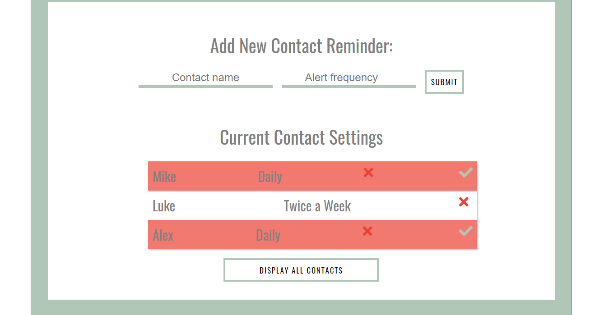
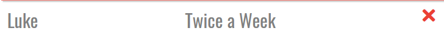

How to Stay Motivated While Learning JavaScript
July 22, 2020
Last week, I saw a tweet where the author was asking the Twitter tech/code community for some advice.
Essentially, they'd spent some time learning HTML and CSS and picked it up relatively easily, but now after about three weeks trying to learn JS, they were wondering if they should just move on to something else because it just wasn’t sticking.
The problem with thinking that we should just stop learning something because it’s difficult, or because it doesn’t make sense to us is that that’s precisely when we should double down on our efforts in learning it.
I don’t mean double down in an effort-type of way, though.
I mean it in the “in it for the long-run” sense.
Here are three major things to keep in mind when staying motivated while learning JavaScript (or any other programming language!):
1 | Embrace it for the long-haul
First of all, I don’t think it’s helpful to consider it “giving up on a language” because that only lends itself to a finite mindset where we’ve neatly packaged up one thing to move on cleanly to the next.
If I think about it, I’m still learning - to this day - new things and tricks with HTML and CSS whether that’s with better structuring/organizing or whether that’s making my code overall more accessible.
I don’t recall recently wondering when I’d be “done” learning something.
I think when we learn something, it’s helpful to truly adopt it as just a part of your life. As something you’re cultivating and that adds to the overall makeup of who you are as an individual.
2 | Don’t compare your journey with anyone else’s
We’ve all heard that comparing ourselves or our own personal journeys with others only leads to distress and discouragement.
While someone might be able to pick up what you’re trying to learn in half the time, that doesn’t mean anything about you!
We also don’t know all of the behind-the-scenes behind another person’s life and journey.
Maybe they had the opportunity to work with a personal tutor or highly-engaged mentor.
Maybe they’d already had the foundations of learning from taking computer science courses in the past.
Maybe they don’t actually possess all the skills you imagine they have and they just show up in a confident way.
Right? All of these situations are different, but they’re all distinct possibilities regarding the behind-the-scenes lives of people you might be comparing yourself to
3 | Document your journey
Documenting your journey by blogging about it, creating videos, speaking at conferences, or anything else can help you stay motivated during your time learning.
Not only does it give others insight into the lessons you’ve gained along your own journey (if you so choose to share it publicly), but it also creates this intrinsic motivation for yourself since you can actively see the progress you’re making.
I’ve been consistently documenting my own coding journey for going on six months now and it’s been the best gift I could have ever given myself, especially since we tend to forget the minutiae of day-to-day happenings and learning.
Aside from that, it also creates a sort of accountability method for yourself to make sure you show up each day to share what you’re doing, what you’re working on, or what you’re currently having trouble with.
Make it a part of your daily routine - however that may look (in the morning, before going to bed, during your lunch break) - and it’ll be the best thing you can do for yourself and your motivation.
-----
If you’re currently asking yourself if you should stick with whatever it is you’ve just started learning, I’m here to give a resounding YES.
Personally, I’ve been learning JavaScript for the better part of seven and a half months, and I’m always surprised at how easily things click for me now that I had no conception of months ago when I first began this journey!
You're the Creative Director
July 21, 2020
Happy Tuesday! We're two (count 'em, two!) days out from CodeLand 2020! Have you registered yet?? >>
I've mentioned before that one of the main points in my CodeLand talk ('Being Utterly Fearless in Your Pursuit of Learning to Code') is about being the creative director of your own life.
I love this idea so much because it seriously flips the script for so many of us from being one of telling ourselves that there's so much we don't know to one of empowering ourselves to explore the limitless possibilities and opportunities we can create for ourselves.
Being the creative directors of our own lives enables us to look at all of the projects or potential projects (i.e. those ideas that are swimming around in our head that we'd love to build upon someday!) and effectively plan out when they'll be completed and altogether brought to life.
And then it's just rinse and repeat from there.
I'm working on some sort of workbook to send out to my email list that will help them plan out and actually carry out work on their creative projects (even and especially if life's busy-ness tends to get in the way, well, all the time).
And if you're not already on my list, consider signing up here >>
See you at CodeLand on Thursday (July 23)!
Start of the Week - Grab Your Plates!
July 20, 2020
Happy start-of-the-week, friends! I hope you had a restful weekend and are ready to hit the ground running this week :)
I have a few things on my plate:
First, I'm preparing for my CodeLand talk (it's on Thursday!) and I'll be doing a run-through on my own today probably.
I also have a few things coming up for Ladies Code Collective that I want to set on the right track for now. So, some planning and writing copy for one of my pages on the site.
Later this week, I'll want to work more on that podcast accelerator application I mentioned a few posts back. It's due at the beginning of August, but I've been getting more used to getting things done and then having relaxed, focused time to check over everything (instead of skating by at the last minute, as I've been very wont to do in the past).
Could this be the week that I finally finish my JavaScript course on Udemy? I suppose we'll soon find out!
Don't Give Up On Learning JavaScript After Three Weeks
July 17, 2020
Happy Friday to all who celebrate it! Despite it being a very short week, I feel like I've gotten a good number of things accomplished, which feels nice.
Something I'm thinking about for the moment is how important it is to give yourself ample time to learn something.
More specifically, I'm looking back to when I first started teaching myself how to code and imagining that I'd be ready for professional-level stuff at the end of a couple of months.
I'm sure that, in some cases, it does actually work out like that and then people just end up learning a ton on the job, etc - but as I've been learning/teaching myself for the past 7.5 months now (!!), I'm realizing having that much time has been instrumental in truly dialing in the fundamentals and making sense of so much that I've been learning since the beginning.
Let's take React (a JavaScript framework), for example. When I first started dabbling in learning JavaScript, I also had a crash course on learning React at the same time.
It was all fine and good as I was learning, but once I started to do projects on my own, I realized I really didn't know anything at all.
As I'm slowly but surely getting further and further along with learning the true ins and outs of JavaScript, I'm discovering that so much of what I thought was the React framework is actually just native to the JavaScript language itself.
I recently responded to a post on Twitter where someone mentioned that they'd been learning JavaScript for the past 3 weeks and it just wasn't sticking, and they asked if they should stick with it.
Well, I'm here to say - 1000% yes because I've been with it for seven and a half months and some things are just now starting to stick that I wouldn't have even been capable of understanding at just a few weeks in.
On Today's Plate
July 16, 2020
Thursday morning. Feels weird because I had a very long weekend, and yesterday was really the start of my work-week. So, this Thursday feels very Tuesday-ish.
I have a few things on my plate today -
First, I'm going to put in one hour on my Udemy course (I'm seriously almost finished!). In the course, we're working through our final JavaScript project, which uses an API to pull up recipes from different cooking blogs and websites into the app itself.
I think I have around two hours left, and consistently doing around one hour each day has helped me not think of it as a huge project with no end in sight.
Then, I have a podcast accelerator program I want to apply to, so I'm going to open up that application today and start drafting out the responses and overall plan. I'm dedicating about an hour and a half to this.
Lastly, I have a website that I created a few years ago on Squarespace that I want to completely reconstruct on my own using React and a database for all of the information within the site (it's mostly information about cities all over France, so I want to create a database - probably with Firebase - that will hold the data for each city).
That's going to be an overall heavier project where I'll need to focus on it for some time, so I'll probably create an 'Under Construction' landing page today, transfer the domain over, and add in a form to collect email addresses for anyone who wants to be notified when the site has been officially relaunched.
Onward!
The Power of Being a Self-Starter
July 15, 2020
I love the idea of being a self-starter because you don't necessarily need any prerequisites or advanced degrees to be one.
Really, all you need is the decision that you're going to start something or embark on an interesting project and then begin to put one foot in front of the other as you make your way toward whatever it is you're working toward.
I'm on *such* a Hamilton kick ever since I watched it the other weekend and, yes, I admit I've been listening to some of the songs on repeat since then.
To connect that back to this post's point, I absolutely *love* this line from the very first song of the musical ('Alexander Hamilton') -
[Alexander Hamilton] got a lot farther
by working a lot harder
by being a lot smarter
by being a self-starter
How to be a self-starter? Hard work and consistent effort toward your goal. Rinse and repeat with getting yourself started on really whatever you want to do in your one precious life.
Who Am I *Not* to Put Myself Out There?
July 10, 2020
I had a wonderful walk this morning where I had the chance to think about my current life projects and where I want to go with them.
I don't think I'd be anywhere close to this headspace at the moment had it not been for the fact that I've been so enthusiastic about certain situations in my life as they presented themselves to me.
In other words, if I saw an opportunity that gave me a certain spark, I chased it down. Period.
More recently, I threw my proverbial hat into the running to be a speaker at this year's CodeLand:Distributed Conference.
As a relatively novice coder, I'll sometimes look at the lineup and think I'm way out of my league.
Like, who was I to think I might be able to share the stage with such accomplished engineers and other experts?
But, then again, who am I *not* to throw myself into the running?
What if all of the experiences I've accumulated up to this point have put me in the exact position to share my perspective and potentially reach those who need to hear it most?
All this is to say - I invite you to attend this conference - CodeLand:Distributed on July 23 (it's virtual, so you don't need to get all dolled up - unless you really want to).
My talk - Being Utterly Fearless in Your Pursuit of Learning to Code - will be my first-ever foray into public speaking on a relatively larger scale.
And I'm so excited about it!
If you're interested, just head to www.codelandconf.com to register.
Day-After Sluggishness
July 9, 2020
I'm feeling tired today! I had a big podcast day yesterday - recording, editing, launching another episode, etc - so I'm feeling the sluggishness today.
Go check out Episode 2 of The Ladies Code Collective Podcast here >>
Anyway, I think it's just something to get used to, and then after a few weeks, it'll become habitual.
Other than podcasting yesterday, I had a great chat with a dear friend and software engineering mentor I have from my last job, and we talked through some planning for an upcoming big coding project I have on the horizon.
I so appreciated his generosity with sharing his ideas and expertise, and I really believe in the power of having good mentors to be able to bounce ideas off of over time.
Today I'm going to work a bit on my Udemy JavaScript course and continue on with building up the recipe-finding app we're currently building (APIs, etc). I'm loving what I'm learning and can't wait to keep going with APIs in the future!
Your Gal's Legal in France!
July 8, 2020
Oh man - I am *excited* today! I just got my residency card as a legal resident in France, y'all!!!!
When talking with my friend yesterday and she'd asked how long I'd been waiting on this, my response was "Five years...." (the amount of time I've been in France).
But in reality, the overall process has lasted more or less the past year or so.
This all goes back to me harping on and on about cultivating patience in each moment in our lives because, let me tell ya, this has been a long process but I tried to never let the idea of the outcome (altogether out of my control) affect how I conducted myself in my day-to-day life (altogether *in* my control).
Same goes for coding and learning to program. If we get so wrapped up in whatever outcome we're after (i.e. a new job/career, launching a popular app, starting a company, etc) that we don't embrace each joyful and frustrating moment of the day-to-day learning - I'd go so far as to say that it may not have all been truly worth it.
After all, once we achieve whatever it is we're seeking, we'll be so primed to move onto the next objective and start the whole process over again.
Embrace the day-to-learning. Don't get too wrapped up in the outcome of whatever it is you're currently seeking. And just live a damn good life.
"I'm Not Ready"
July 7, 2020
So I try to meditate (i.e. sit in silence and not do anything and sometimes achieve this cool, out-of-body spinning sensation) for 10 minutes every morning during the week.
I've been doing it consistently for the past - mmm - four months (?) but have been doing it on-and-off over the past 2-3 years.
Just a quick note - I highly (!!) recommend it to iron out any spikey brain waves and to get your day started on a relatively calm-yet-energized note.
This morning, as I was meditating (with the Dreamy Vibes playlist from Spotify in the background), I noticed this thought pop up in my mind:
"I'm not ready."
Normally during my meditations, I just zone out for a few minutes and am not really all that conscious of any thoughts peeping up. But this morning, I was surprised that that thought was so clear.
It's good to have this clear idea of what exactly I'm thinking because now I can go about my daily tasks while being aware that any resistance to what I'm doing is *most likely* a direct result of this one thought of not being ready.
Yay for clarity! Yay for doing whatever I was going to do anyway!
Today it's 1) working through a couple sections of API work in my Udemy course, 2) making a minimum of 5 get-out-the-vote calls for Americans abroad, and 3) designing a few media graphics.
What's on your plate? Anything your brain is telling you you're 'not ready' for?
Continuing to Cultivate Patience
July 6, 2020
Easy, cool Monday morning! I've been noticing something interesting over the past few weeks/months --
I think I've written about it before somewhere, but here's the thing. Any time I'm presented with the thought of going through a process of any length in order to achieve something at the end of the process, I immediately and automatically feel this abrupt sense of impatience and a thought along the lines of "Ugh, for God's sake. Can't this be done already?"
Like...what? That thought enters my mind *even before starting* whatever process at hand.
And, mind you, this can range from a long-game sort of thing (months and months) like building an audience for an online community, a medium-game (a week or so) like putting together a big puzzle, or even in the shortest of processes (minutes) like cleaning up those puzzle pieces and putting them back away in their box.
That first initial thought of impatience is funny and weird, but I think it can have an altogether more insidious effect if we listen to it and don't end up even starting in on a certain process because we're *already* bored of the steps we'd need to take to get there.
This is why we need to develop a true love of the process for any goal we're pursuing. We need to cultivate the patience to sit down each day, even if the magic has worn off.
If we idealize too heavily the end-point or the destination, what do we have left at the end of the day once we reach that destination and move on to the next level or something different altogether?
How I'm Training My Brain to Help Me Show Up Each Day
July 3, 2020
It's a chilly Friday morning and I feel good! Got my day all planned out - complete with working out, working on my Udemy course, and getting started with Eleventy for building out a website.
Tonight we're invited over to our neighbors' apartment for an apéro/game night, so we're looking forward to that, too.
I'm learning so much in my JavaScript course on Udemy. Right now, we're working on building a recipe-finding app using an API, and I'm seriously loving it.
The minute you pull up data from another website on your own website's UI is such a game-changer and makes you feel incredible as a developer! I can't wait to build so many more advanced projects this way.
Overall, it's been a great, productive, well-paced week. I've found that planning out my day on paper (in pencil, mind you - in case of changes) has been helping me *enormously*.
It's almost as if my brain has this semi-concrete plan or overall framework to guide it, and then it works behind the scenes to make sure I show up to everything on the list on time and ready to go.
Highly recommend having a general, written plan for each day if you're trying to get more sh*t done.
Have a great weekend, friends! And go listen to the first episode of my podcast!
Tinkering Around
July 2, 2020
Hi friends - hope you're doing well this morning!
Yesterday was such a wonderfully productive day - I kind of felt like that gif of that cat tapping away wildly at the computer - you know which one I'm talking about!
As I mentioned, I'm practicing constraining all podcast production work to one day of the week so that I don't get bogged down with it all the other days. I think it'll be good - looking forward to seeing how it works out.
I'm feelin' good! Today I'm planning on making a few phonebanking calls to help get out the vote, going for a nice long walk, and working a few solid hours on my JavaScript course on Udemy.
Tomorrow I'm going to start getting my bearings on working with Eleventy as a static site generator. I'm wanting to use it to transfer one website I have (So You Think You Can France website) over from Squarespace to being one I host on my own and built with Eleventy.
Eventually, I'll also probably end up building a more full-service Ladies Code Collective site with Eleventy. I was considering going with Squarespace for that instead, but after a bit of tinkering yesterday (in Squarespace), I just wasn't happy with not having the most control over all functionality of the site, so I'm probably going to go that one alone as well.
Disclaimer: I'm a huge fan of Squarespace for out-of-the-box functionality, especially when you don't have too much experience yet with developing your own sites. I think, though, that at a certain point, it becomes a bit too limiting when you want to be able to have a hand in all parts of developing your own websites.
I think that's all from me for today! Have a good one and just remember to put one foot in front of the other - step by step, breath by breath.
Today's the Day I Launch My Podcast!
July 1, 2020
Happy July! Hope you're having a nice morning - I'm sitting out on my balcony on this cool summer morning, listening to a funky little song. Life is good.
Today's the day I officially launch my podcast - The Ladies Code Collective Podcast!
I'll be sharing an email update with my email list, so if you're not already a part of that, you should 100% go sign up! >>
I'm experimenting by designating exactly one day per week to all podcast pursuits. That's to say that I'm going to use today to communicate with my email list, upload the corresponding podcast episode to YouTube as well, and then record and edit another episode to place in the pipeline for a future date.
We'll see how it goes, but I'm looking forward to having these constraints instead of letting All The Things™ take up precious mental space all week with no limitations.
I mentioned on Monday that I wanted to work on my JavaScript course a bit, but I haven't gotten around to it just yet. I'll probably pick back up with it tomorrow - yay!
Alrighty, that's all from me for today. Have a good one, and make today count!
Showing All the Way Up
June 29, 2020
Happy Monday, folks. I usually write in the morning, but today's post is comin' atcha at 7pm, so hi!
I'm really excited for this week and I don't really know why. It's possible that since I had a full, fun weekend 100% away from my computer, I'm just ready to get back into it, but it could just be one of those happy, excited weeks.
I just submitted a rehearsal recording of my CodeLand:Distrubted 2020 talk (I'm so, so excited about it), and I'm happy to have crossed off a big item of this week's to-do's at the beginning of the week.
The rest of this week is all about Ladies Code Collective (launching my podcast!!! communicating with my email list!!!!) and probably returning a bit to my JS course on Udemy to work on a recipe finder app.
We're with it. We're here. We're showing all the way up.
Have a great week! I hope you take a few big steps in the direction of wherever you want to go in life.
The Best 30 Seconds of My Day
June 26, 2020
I'm still not over the idea of just taking things one step at a time. Seriously, it helps so, so much every single damn time!
I've been putting off this random task of checking on an immigration item I have - French administration is known for being somewhat of a tangle of confusion - and so, I've been majorly putting it off because I had this thought that it was going to be this all-consuming task that would literally leave me with zero time ever for every last day of my life..
Well, I'm here on the other side, and I'm proud to share that the question and stress I had about it was answered and resolved within, I kid you not, 30 seconds when I ended up going to the immigration office's website and seeing the response as a broad announcement to all site visitors.
Why do I do this to myself?? Lol I should know this by now - to just jump in, get it done (step by step), and move the eff on!
Anyway, now that that only took 30 seconds of my day (as opposed to the rest of my living days), I'm looking forward to diving into some API learning and practicing within my JS course.
Cheers, and have a fantastic weekend!
The Secret to Getting Literally Anything Done
June 25, 2020
The secret to get anything done during your day is to break it up into individual parts and do them one by one.
This doesn't have to be done officially on, like, paper. Rather, you should get into the habit of breaking things down into parts on literally anything that makes you instinctively think 'Ugh, that seems like a lot...I'm going to busy myself with something else in the meantime to put off having to get started on that...'
While this is mostly having to do with coding problems that seem insurmountable (breaking down into smaller parts and then tackling them one by one), you can use it on anything during your day to get yourself into the habit of seeing a biggish issue and not having your first subconscious inclination be to shy away and procrastinate.
For example, today I was responsible for being the sou-chef to Arthur's pizza-making for lunch and when faced with all the veggies to be chopped, my first thought was 'Ugh, this is a lot...', but immediately after, I just compartmentalized each step in my brain, grabbed my first stick of squash and got chop, chop, choppin'.
Use it for anything. Cooking, getting ready in the morning when you just want to scroll Instagram for Five More Minutes™, getting motivated to get to the gym, etc.
Break it all down mentally so that your brain has something concrete to attack.
And then, just get to chop, chop, choppin'.
Accomplishing That *One* Thing Each Day
June 24, 2020
Random thought: I feel like today is a birthday of someone I know well but I can't remember whose, so if it's your birthday, happy birthday!
Wednesday morning, folks! I had one of those great wake-up-early-naturally kind of mornings, and they just feel so good. I took little Nelson outside, then dug in a bit to my latest read: Atomic Habits by James Clear.
It's been on my list for a while now, and it finally became available to me on my Libby app, so that's fun.
Today I'm planning on recording another podcast episode (this evening) and signing up for podcast hosting (yay!).
I can't even explain how much of a game-changer it's been in doing just *one* thing each day to push myself forward on whatever my current goal or project is.
Intuitively, I think we want to try to get as much done as possible each day, but I'm finding that this all too often leads to burnout and apathy.
Doing just one thing each day and being satisfied and proud of myself is the way I want my life to be, always, so I'm practicing that now.
(See also: Designing the Life You Want to Live)
So, podcast eppy tonight, and then I'll probably do another hour or so of learning about and implementing APIs in my JavaScript course on Udemy.
Other than that, we're headed to our fave swim spot today and I can't wait to watch my little sausage, Nelson (dog), go ham for the swims. Cheers!
Shifting Gears Today - Learning Over Doing
June 23, 2020
Good morning! I woke up today wanting to put all individual projects on hold for the day and instead focus back on the learning side of things with my JavaScript Udemy course.
From where I've left off, I'll be starting in on a big project that makes use of some sort of recipe website API, so I'm looking forward to finally getting more focused practice on using APIs.
At this moment, I'm feeling like APIs are something that seem slightly insurmountable when, of course, I know they're not, and I just need to learn, implement, and start building with them.
It's that reliable moment when our brains start getting a little anxious because we don't know *exactly* how to do something, so they shy away in favor of doing things they've mastered - like scrolling social media or diving back into our latest book or TV show.
Brains - those clever little devils!
Looking forward to shifting gears today and embracing a few hours of learning some new things!
P.S. I'm on the cusp of launching a brand-new podcast! Stay up to date by signing up for the newsletter here >>
I'm Launching a Podcast!
June 22, 2020
Hi, friends! I'm excited to announce that I'm launching a podcast soon! >>
The Ladies Code Collective Podcast - for women who code, women who tech, and women who follow their creative impulses.
It's been on my mind for a while now, and as an avid pocast-listener myself, I thought a podcast could be the perfect direction for me to take in building up a community of other creative coding ladies.
I have a few specific goals for the podcast itself:
1. To discuss and celebrate the intersection of coding logic and creativity
2. To encourage women of all backgrounds to embrace the creative side of learning to code (as opposed to relying on any hard and fast, one-size-fits-all blueprint)
3. To build a community of women in tech who can offer and receive support around their pursuit of learning to code and building their respective creative projects
If I've learned anything over the past six months of teaching myself to program on a full-time basis, it's been that reaching a level of coding that allows for the building of more creative projects can only help women who may be in the same position of teaching themselves to code or considering to do so.
I love the idea of learning "enough to be dangerous," and I think achieving that along with the support and community of other like-minded women can only lead to truly amazing things for women in tech.
Here's to a great new adventure!
Stay up to date by signing up for the newsletter here >>
This is Me Showing Up
June 19, 2020
I'm so tired today. It would be so easy to not open up the laptop and write my small piece here, but I want to show up for myself - because I said I would. And that's building integrity with myself.
It's Friday, so I'm ready to rest and relax and enjoy the weekend. Lots of reading and sun-lazing to be done before jumping back into the thick of things when Monday rolls back around.
I think next week I'll probably unveil my latest project (yay!) but I don't think it'll be a huge announcement or anything like that. I'm more going for the slow burn of a sustainable thing than a bright and spectacular explosion all to fizzle out in a short matter of time.
So if you're reading this and you're a cool gal who codes and you want more time to pursue your creative pursuits and coding projects with other cool gals, make sure to watch this space :)
What I'm Up To Lately
June 18, 2020
Cloudyish, cool Thursday. Just sitting down to write at a little after noon here. I think I'll give a little list of the things I'm up to lately. Lots of cool stuff swirling around in this here brain!
TOP OF MIND:
- On the cusp of launching a cool podcast and community for creative coding ladies (more info to come, yeeee!)
- Preparing my CodeLand talk - taking place on July 23 (and you're invited!
- Nursing my strained neck back to health with yoga and nice walks instead of HIIT workouts
- Wrapping up some hourly client work and invoicing, etc.
- General life admin
THINGS I'M PONDERING:
- Deciding whether or not to share more behind-the-scenes stuff on Instagram
- A new project adapted from my Wellbean project that helps keep track of when a certain household chore was last done
- Transferring my So You Think You Can France website from being hosted on Squarespace to being built up again with React and hosted on GitHub pages
- Continuing on with my JavaScript course, APIs, and all that fun stuff
Whew - all looks good! Thanks for coming to my spur-of-the-moment brain inventory!
P.S. I'd love to know what you're up to these days re: creative coding projects or just life admin in general! What's on your proverbial plate?
So I Have This New Idea
June 17, 2020
If you know me at all (and by 'know,' I mean that generously as in 'if you've read some of my blog posts'), you'll know that I love new ideas and sometimes can't contain them and then they end up bursting at the seams of my brain.
It's a fun thing to experience, but it can be overwhelming if I get overly existential about it.
Kind of like when people get sad when they think about the fact that they will literally *never* in their lives be able to hug *every* single puppy or kitten in the world, or be able to read *every* single book ever written, or meet *every* single individual worldwide who could potentially be an awesome fit as a friend...
It's kind of like that for me with ideas in my mind.
While I try my best to see them through, it just so happens that sometimes the idea has to pass through or by us before moving on to someone else who can perhaps better bring it to life (a paraphrased idea coming from Elizabeth Gilbert's Big Magic, which I recently read for the second time).
Anyway, as I was in the shower just now, I had an idea to develop a little web app to help me keep track of chores that need doing around my apartment.
Coincidentally, it's the same structure as I used for my Wellbean project in keeping track of contacting friends and loved ones. So maybe it's something I can spin up this weekend. We shall see... I'm excited about it! Hehehe.
Be the Creative Director of Your Own Life
June 16, 2020
One of my key points that I'm going to be talking about in my Codeland talk (P.S. You're invited to tune in!) is the idea of being the creative director of your own life.
So often, we find ourselves positively stagnant when we don't know which direction to take - whether that's in our careers, in love, in learning to program, or just in making one simple-ish decision over another one. It can be jarring and intimidating when we think we'll end up making a "wrong"* decision.
But honestly, when we shift our mindset to being one of embracing all the possibilities available to us (instead of feeling stuck in analyzing the merits of each decision and consequently never making a move), we seriously become so powerful and, dare I say - unstoppable.
By coming to the realization that each decision we make moves us in a forward direction, regardless of the decision, we start to learn to take things a bit less seriously.
We can stay stuck, sure - but why would we want to when we could embrace being the creative directors of our own lives and thus making things *happen* in heretofore unbelieveable (to us) ways?
I'll talk more about this in later posts - maybe more actionable items - but, then again, who's to say you need actionable items to start taking charge and being the creative director of your own life?
Embrace the choices you make with confidence and never stop pursuing those creative impulses!
* Quotation marks because I don't think 'wrong' is objective, and instead it would just be a decision that creates a *different* reality - not better, not worse - just different.
B+ and Out the Door!
June 15, 2020
Sunny, happy Monday morning. Ready for a great week. A package was delivered to my friend for her birthday (today), which is always a great thing.
My neck is still hurting, but I just did a 20-minute Yoga with Adrienne video and I'm feeling better. Just one of those things you can't rush along, and that's okay.
Yesterday, I worked a bit on my Udemy JavaScript course (that I've actually set on the back-burner since the beginning of April - whoa, time flies). I reviewed some API stuff, which I seriously can't wait to delve deeper into since I know I could create some rad projects once I have a good handle on all that!
I'll probably dabble a little bit more with that particular section of my JS course today (I'd like to figure out an issue that popped up at the end of my study session yesterday).
Other than that, I'm focused on getting things set up for my podcast launch - yay! More info on that to come. For now, it's more website/email/mailing list set-up, etc. You know, the foundations and all that jazz.
But! I'm promising myself not to get all caught up in that and consequently letting it all drag on without a foreseeable end. As I'm learning and trying to implement day after day: 'B+ and out the door!'*
*Altered just a bit from the original 'A- and out the door' from the Unf*ck Your Brain podcast
My Neck Hurts
June 12, 2020
Arghhh! Yesterday after working out, my neck started hurting and so I've been slowing way down on things to do since yesterday and today.
I didn't get around to my Wellbean optimization yesterday, but I did record my podcast outro (yay!). Going to head straight into Wellbean now and then grab my microphone and do a 'practice' recording of my first episode.
(Viewing it as 'practice' helps take the pressure off and allows me to just have fun with it, ya know?)
Then that'll be enough work for an easy-going Friday because diving in to some more work on Sunday afternoon with Ladies of Code London folks.
Cheers!
Consciously Thinking This Thought Today
June 11, 2020
Relaxed, chilly, cloudy Thursday morning. Here's what I'm working on today:
I'm consciously thinking this thought: "Doing one thing each day to move myself forward is far better in the long run than trying to 'do it all' every single day."
It feels good. It feels great! Sticking to it.
Yesterday, I recorded and edited the intro of a podcast I'm planning to launch in the coming weeks (!!!), and today I'll be recording/editing the outro. Exciting.
Walking through my CodeLand Conference talk. A couple days ago, I submitted my slides for review, and now I'm focused on tightening up my talk and really getting a few points down and solid.
If time allows: working on my Wellbean project code a little bit. I met with one of my old colleagues, a software engineer, last week via Zoom to catch up and go over some of my code, and he helped me find a specific area that could be improved/optimized. Again, if time allows, I'll hop into the project; if not, no worries.
Cheers!
Designing the Life You Want to Live
June 9, 2020
Something's been on my mind for a while that I'd love to share here. It's been an idea that's been simmering in my head for the past few weeks (maybe month or two, who really knows where our ideas come from or when they arrive?).
It's the idea that if we're not currently living the lives that we want to live in the future, then we need to make changes *now* to be able to live the types of lives we want to.
Now, I'm not talking about wanting to be extremely wealthy in the future future, and then acting as though you are *now* and consequently spending exorbitant amounts of money as a result. In my humble opinion, that's actually not a great (or sustainable) idea.
What I'm talking about mostly has to do with our own habits, beliefs, and systems of both work- and home-life.
For example, in the not-so-distant past, I would work myself to the absolute bone every single day without rest. If you've been reading along with me for any amount of time, then you may know that I've been rather focused on having time for working hard and also having designated time for resting and taking intentional breaks from said work.
One example of how I see it: if I want to be a conscious and fully-present parent to a child one day, I need to pay attention to how conscious and fully present I am *now*, each and every day of my present life.
I can't keep going on, entertaining my workaholism and can't-stop-won't-stop mentality now if I don't want that to be my reality in six, twelve, eighteen plus months from now.
The thing is - we don't just wake up one day totally different from how we've been our whole lives. We really have to work to change those habits and life systems.
We may think we'll "grow up" as the years go on, but I think our current habits actually tend to get further and further ingrained - and thus more difficult to change - as the years pass us by.
So for me, those designated times of rest and breaks from working are kind of revolutionary.
I'm not doing it each day for its own sake, but rather I'm consciously designing the very life I hope to be leading in which I don't need to make these very intentional efforts since I will have already built the foundations for them by living that way today and tomorrow and so on.
Reelin' the To-Do's Back to Today
June 8, 2020
And Monday rolls around yet again! After a restful and rejuvenating weekend in the countryside, I'm ready to hit the ground running (or at least jogging at a brisk clip)!
I have quite a few things on my to-do list this week, but I'm trying something new in that I'm only going to focus on completing *one* major thing each day. (Note: This is down from *three* things each day.)
The reason here is that I've noticed those three things each day end up snowballing themselves into an avalanche of lots of things to do (I'm workin' on it...!) and I end up losing focus on moving the needle a little bit each day in favor of stressing myself out with perfectionist overwhelm.
On the list for the week: lots of life admin items, submitting materials and slides for my CodeLand Conference talk, adding a bit of new/necessary info into the talk itself, finally diving into APIs in my Udemy JavaScript course...
And there I go, getting a little wild with the to-do's... Can you relate?
Okay, reeling it back to today. Today's all about my CodeLand talk and my aim is to get all that's needed complete for that.
Will keep you updated as to how it goes. Cheers and happy Monday!
This is Not Normal
June 4, 2020
Violent police response to protesters: These are the same types of video clips I saw and was horrified by during the Occupy movement when I was a freshman at Cal in the Fall of 2011.
The feeling I’m having now is the same visceral feeling I had then but was unfortunately quelled as a result of some of my most trusted resources “reassuring” me that what is not shown in this footage is the citizens’ and protesters’ “provocations” of the police.
“Reassuring” me that US police forces are only trained to react violently, so if it gets to that point, something had to have happened to have “rightfully” triggered that reaction.
Nine years ago, as a college freshman, I was enraged and appalled but I’m only too aware of how that rage and disgust eventually drifted away and I had the privilege of it not affecting me and carrying on with my college life, etc.
Then a few years later, during the riots in Ferguson, Missouri after the fatal shooting of Michael Brown, I remember sitting in a room of a frat house with friends and having one of them insistently asking me for my reaction and what I’d do about it. Overwhelmed, I fled.
Because I didn’t know.
I didn’t know how to feel. I didn’t know that my rage and disgust could go anywhere. I didn’t have the confidence to use my voice, nor did I feel I had the ability.
But now I do.
This is not **Normal**
This is not **Normal**
This is not **Normal**
This is not **Normal**
This is not **Normal**
This is not **Normal**
So many times in my own life, in just the past ten years even, I’ve seen and felt these tensions come to a head and then after some time, we let the feelings of rage and disgust drift away.
We allow them to because it’s not as convenient as *not* thinking about it and carrying on with our lives, business as usual.
We allow them to because posting about these events isn’t as “sexy” as keeping consistent with our “brand voice” or our Instagram aesthetic.
To which I say, FUCK your brand.
*************
This time feels different, because it is different.
We can do better. We can do *something*
It's Time to Give Back to BIPOC Communities in the US
June 3, 2020
Starting today and for the foreseeable future, I will not be making the $200/month payment to my student loans that I've been trying to make each month since being without a job for the past five months.
That money will now go toward taking action to support BIPOC (Black/Indigenous People of Color) communities in the US.
Starting today and for the foreseeable future, I will be putting investing for my retirement on hold by no longer investing $150/month into my Roth IRA.
That money will now go toward taking action to support BIPOC communities in the US.
Starting today, I will be cancelling my monthly gym membership (45EUR > $50/month) and working out for free in and around my own home.
That money will now go toward taking action to support BIPOC communities in the US.
>>>> Can you reallocate some of your money each month to take action?
I don't know your situation, nor is it my business, but here's where I am:
- No job since December 2019
- Being frugal with the savings I do have (and am incredibly fortunate and privileged to have been able to build up)
I've just found $400 to support BIPOC communities that I *will not miss* and I *do not have* a steady paycheck keeping me comfortable every two weeks.
Doing *nothing* feels grossly sickening to me, personally, in this moment.
I *cannot* do nothing. I *will not* do nothing.
I *will not* look back on this and future moments with the haunting, terrifying, nightmarish knowledge that I did nothing.
That I rested comfortably in my complicity while our Black sisters and brothers continue to fall brutally victim to a system and a nation that is simultaneously their Home and their Hell.
Do something now. Don't scroll past. Don't turn a blind eye.
Start small and iterate from there.
Inserting Adjacent HTML Without Messing Up Formatting
June 1, 2020
Here's a cool solution to a problem I was having last week! The Problem:
So, I have an unordered list in my Wellbean app that renders the contacts a user inputs into the UI. Once the contact
is added, a timer is set on each list item and displays a red background once that timer has run out, depending on the
frequency the user chooses when inputting it (i.e. 'Daily,' 'Weekly,' etc).

Now, I also wanted to add a green checkmark to the list item, right next to the red X, that the user could click on
to reset the timer and revert the list item's appearance to its default white background.
Since the list item's display is set to flex, and it's flex-direction CSS property is set to space-between - this
means that all items will be spread out across the length of the list and spaced out between. So, when I tried to use
the insertAdjacentHTML method on my unordered list, the inserted checkmark made the list item's elements (the name,
frequency, the X, and the checkmark) super wonky and not at all aligned with the default appearance of each list item:

The solution:
After a bit of thinking on this and some trial and error, I realized that since all nested HTML elements are child
elements of whatever they're nested beneath, I could isolate exactly where I wanted to place the green checkmark (i.e.
right next to the red X), by using the childNodes property on the list item itself and then grabbing the exact spot where
the red X shows up.
In other words, the default list item (with the white background, when the timer hasn't run out), contains three
children:
- The name (childNodes[0])
- The frequency (childNodes[1])
- The red X (childNodes[2])

Since I wanted to place the green checkmark right next to the red X, I needed to use the insertAdjacentHTML property on
that specific element (the red X).
So! Here's what I came up with:
document.getElementById(`${id}`)
.childNodes[2].
insertAdjacentHTML('beforeend',
// Font Awesome green checkmark //);
As you can see, by isolating the part of the list item that contains the red X (a div whose innerHTML is set as the
red cross, you can insert your new HTML (the green checkmark) just inside of the div and next to the red X, instead of inserting it as adjacent
HTML into the entire list item, causing its formatting to get a little crazy and all over the place.
And here's what that looks like now:
Hope this helps a bit if you're having trouble inserting adjacent HTML into an element with several child elements nested within! The childNodes[i] property will help you enormously.
Giving Structure to the Creative Sparkles and Spirals
May 29, 2020
Happy Friday, folks! Today's a pretty chill day for me - nothing too crazy to share just yet, since I'm in the very beginning stages of a big project I've been wanting to start for a while now.
It feels like something that could be a perfect combination of all of the experiences I've had in my life thus far, and I'm really excited (and nervous!) to bring it to life.
Today is about strategizing and giving some structure to all the creative sparkles and spirals that are currently mapping across my brain.
What this means is that I'll essentially pull a Dumbledore when he takes the memories out of his head with his wand and then puts them into that little fountain. (Is that how it goes??)
I'll be taking all my notes and thoughts and get them onto paper with a clear vision of what's needed and when I'd like to go it by. I love this kinda stuff!
So! I've got my mug of tea, I'm listening to some Led Zeppelin recs from my brother ... let's do today!
Cheers!
I'm Giving My First-Ever Conference Talk!
May 28, 2020
Alright, self - enough lollygagging around. It's been just about an hour since I sat myself down to write and in that hour, I've successfully perused a few quick YouTube videos, subscribed for a royalty-free music site, and checked Twitter a handful of times.
So! Big news since the cat's now outta the bag: I'm going to be giving my first-ever talk at the CodeLand Conference in July!
I'm seriously so excited! I posted back at the beginning of April about submitting a proposal to this conference - and I feel so great to have gotten the spot. I can't wait.
Here's the Alex from April 1:
Today's been a much slower day, and it's really felt good! Last night, I'm proud to have sent off my finished application to give a talk at this year's virtual CodeLand Conference! I've never submitted a proposal for a conference CFP, and I can gladly say that I've crossed that one off my coding-journey bucketlist.
Regardless of the outcome, I'm happy to have put my foot forward, and I'm confident I'll give a talk about coding at some point in the next few months, whatever that may look like!
My talk, titled *Being Utterly Fearless in Your Pursuit of Learning to Code*, will mostly be about my journey and my five greatest tips for others who've ventured into the unknown to pursue learning to code and transitioning their careers.
Can't wait to share! Want to attend the conference? Head over here >>
I'm Alex and I'm a Recovering Perfectionist
May 27, 2020
I believed for so freaking long that I wasn't a perfectionist.
I simply couldn't be! I mean, I *wasn't* perfect by any means. And, like, maaaaybe I'd be a perfectionist *if* things were perfect in my life, but they weren't, so...there.
But the thing is... I've learned now that being a perfectionist is actually exactly that: thinking and really believing that things could be perfect in some far-off reality that might be possible to achieve *if* I worked hard enough for it.
This far-off reality is actually just a fluke. It's an unrealistic idea, and even if you're not consciously striving for it, you might subconsciously be thinking that things in your own life and work aren't perfect, so therefore you're doing it wrong and need to work so extremely hard *just* to pass it off as just OK.
It's suuuch a vicious cycle. And now that I've realized I've been acting that way for so long, I'm on a daily mission to combat that type of thinking.
Just this morning, I was considering starting to really design my days by putting my work schedule on a calendar blocked off by 2- to 3-hour chunks. As my mind started to spin out to designing some beautiful, aesthetically-pleasing printable on Canva, I stopped myself right then and there and resolved to use a pencil and a perfectly-suitable blank piece of paper.
Anytime I'm caught in the throes of making whatever I'm working on Just a Tiny Bit Better™ and ultimately losing hours of my time and droves of my mental energy to that pursuit of an impossible ideal, I give myself the benefit of the doubt and get used to thinking that it's perfectly good enough.
Good Enough is powerful. Good Enough is the move.
If you're a perfectionist (or if you didn't realize you actually could be until right now), let Good Enough guide you and set you free.
I'm Making Great Progress on my Side Project and I'm Freaking Ecstatic
May 26, 2020
Wow, happy Tuesday - I'm on a freaking roll since last night. Allow me to explain...
So, yesterday I finally implemented a timing feature for my Wellbean app. Essentially, after a given number of hours (depending on the frequency set i.e. Daily, Weekly, etc), each list item will either stay white (default, timer hasn't expired) or turn red (expired, timer has run out).
When the list item/contact turns red, it means the user should consider contacting that particular contact, based on their pre-set contact suggestion frequency.

Ah! I'm so freaking excited about it. It's crazy how it's all coming together, both in the code and in my mind! I'm so proud of it all.
I'm going to focus today's work on learning how to implement Firebase rules for the database so that I can publicly release it while keeping the data private.
Then, after today, I'm going to wrap it all up, record a demo on Loom, craft up a big readME for the GitHub repo, and shout from the rooftops! Cheers.
Continuing on with my Wellbean Project
May 25, 2020
Easy, breezy Monday morning. I'll admit, the past week and a half has been spent in a bit of a funk for me. Totally normal after a big work-push in the couple of weeks leading up to that tired period, so I tried my best to really (really!) step back from pushing myself.
It mostly worked, I think, because today I'm ready to hit the ground running. Well, actually - I hit the ground running last night when I worked for a bit on my Wellbean project again.
It's the same project I submitted for the Twilio x DEV hackathon, but it's different in its user-functionality. While the hackathon project is meant to be run locally on someone's computer, this particular project that I'm now working on is built using Firebase Authentication - so users can use the app on any server and their information will be stored within the app.
I'm pumped!!! I'm also sailing through the inspiration of this epic idea I have for a project on a much larger scale - letting it simmer for a bit while I finish up some other projects.
It's already a good week and it's not even 10am on Monday morning.
How Blogging Can Help You as an Early-Career Developer
May 20, 2020
I've now been consistently blogging - as in sitting down and doing it every weekday (for the most part) - since the beginning of February. That's just about four months - and I don't see any end in sight!
As an early-career software developer or someone who's making the transition into a career in software development, blogging has so much potential to set you apart from the pack. It also allows you the opportunity to document how much progress you've made over a given amount of time.
(You think you'll be able to keep track of it without documenting it, but - trust me - you won't. There are just too many nuances in the day-to-day that asking your poor brain to keep track of it all would be downright cruel - not to mention, completely unreasonable).
I'm not going to list out the benefits of blogging in a neatly-packaged Perfect Blog Post™ because, honestly, I don't really feel like it. Plus, I'm just free-writing here, so I'd rather feel like I'm having a natural conversation (er - monologue?) with you.
Here's my own personal list of benefits that consistent blogging can have for you as an early-career software developer:
- When applying for jobs, it gives your interviewers a deeper glimpse into who you are, as opposed to only having your cut and dry resume and cover letter to vouch for you
- You can practice your writing skills - and stay sharp as swordfish
- You can track the progress you've made over time - it's like reading a journal from middle school: somewhat cringey, but you're generally glad to be able to sneak a peek into your past stream-of-consciousness experiences
- It can be part of a nice daily routine that gets you in the right head space to do great work
- It can be a great way to set goals and stay motivated to make progress towards them each day
- You might inspire others who may be further behind you on their own career journey
I probably have more, but for now, I think these are some goodies! If you're hesitant to start blogging because you're already overwhelmed with how much you *haven't done* (because, hmm, you haven't started...), just *start*.
After all, there's magic in making moves and starting something that might eventually lead somewhere wonderful.
Brushing Teeth, Cleaning Up, and Cultivating Patience
May 19, 2020
Throughout this journey of full-time teaching myself how to program, I've been aware of the very necessary act of cultivating patience.
As I've been playing the long-game in my coding life - being cognizant of the fact that it's going to take hours upon hours of practice and learning to eventually attain mastery - I've also noticed how much cultivating patience has seeped into my non-coding life, in those small, seemingly insignificant moments.
Before this journey started, if - for example - I'd spilled my dog's food kernels on the ground, I'd immediately feel impatient at the prospect of picking up each little morsel. Now, I'm conscious of being way more patient as I watch the mess dwindle into clean again with each picked-up piece.
Now, I practice finding joy in the full two minutes of brushing my teeth when, before, I'd be rushing myself along, waiting desperately for my toothbrush's signal that time was up.
Now, as I'm cleaning up the pieces of one of the three jigsaw puzzles we have (and that I've assembled countless times since occupying myself during lockdown), I don't get annoyed or impatient with the clean-up.
Instead, I'm motivated to keep going with each small action taken - inspired by the results gained with each passing moment. We may not be able to see the progress at the very instant we take the action, but boy are we proud of ourselves at the end.
New Week, Less Work
May 18, 2020
Hi all, happy Monday! This entire past weekend was spent feeling exhausted and - in my ongoing effort to respect my mental limits - I'm pretty conscious of the fact that I need to take it relatively easy this week.
Thankfully, I was able to relax this weekend, on purpose! Even when I felt tempted to work on one of my project ideas, I had to sit myself down with the reassurance that the work isn't goin' anywhere!
Last week, I was able to finish up my client project, which went absolutely swimmingly. I also had my HackerRank assessment for a job application process. When I look back on it, I was taking the days in stride, but I also realize they were *really* full and high-impact work days.
This week, in my effort to eventually come back in full force, my main focus will be on outlining and starting to prepare an upcoming conference talk (!!! More info to come...!) and migrating some blog posts over to my profile on Medium.
Cheers!
Purposefully Breaking the Pattern of Stress and Overwhelm
May 15, 2020
Oh hey, Friday morning! A very productive, good, challenging week if I do say so myself.
I took my HackerRank assessment yesterday and it was ... quite challenging! Regardless, I'm still so happy that I practiced test questions in the days leading up to it. We'll see how it all shakes out.
That all being said, I'm so proud of myself for not dwelling on it after completing the test. Once I was finished, it was like I'd dusted off my hands and was content with just letting it be. No ruminating, no internal drama.
Overall, this week I've been focused on pulling back from stress at any moment that I feel on the cusp of overwhelm - and it has done serious wonders for me (and my brain).
We often get stuck in patterns, so I want to work to keep myself out of the chronic stress pattern as much as I possibly can. This includes getting back to restful and 'slow living' evenings and weekends. Really committing to it. Doing it *on purpose* and choosing to rest when I can to be able to hit the ground running and eager once the work day rolls around again.
It's a hard habit to break, but it's so, so worth it. Plus, if this is the type of conscious living I want my life to be about, I need to practice it during each and every present moment that make up a lifetime.
My First HackerRank Assessment is Today!
May 14, 2020
Thursday morning. Today's the day I'll be completing my first HackerRank assessment for a job interview process. I feel good and confident after spending one hour each of the past six days practicing and getting used to the HR format. Let's goooo!
Once this assessment is finished, there'll be some nice space open in my mind. I may take a bit of a break tomorrow, or I might just jump in to another project I have on my list - like preparing my talk (!!!) for an upcoming coding conference.
I don't think speaker announcements are fully out in the open yet so I'm not going to divulge too much information here, but you'd best believe I'll be shouting it from the rooftops once it does.
OK! Back to today. Probably going to take a nice walk now and then sit myself down for the test. We're given a full 90 minutes to complete the assessment.
In other news, I can't stop listening to this song or thinking about how much I miss/want to eat Toaster Strudel.
How I'm Implementing the Idea of the Infinite 1%
May 13, 2020
During this period of lots of at-home-ness, I've been revisiting this podcast that I love *sooo* much - Unf*ck Your Brain.
One episode that has caught my attention and that has merited multiple listens (as so many of her awesome episodes do to truly absorb the lessons) is her take on what she calls The Infinite 1%.
I'll try to paraphrase it as best as I can. Essentially, it's the idea that the small, goal-oriented actions and efforts we make compound exponentially over time, as opposed to if we didn't start and just stay stuck at step zero.
In other words, there's not much difference between the individuals who give 50% of their energy each day in pursuit of their goals and those who give only 1 to 5% of their energy each day. The real, immense, infinite distance lies between those making even a 1% effort and those who are making 0% effort day after day.
One way I've been implementing the idea of the Infinite 1% in my life recently is the fact that I have a HackerRank coding assessment to do tomorrow. Now, I found out about this test last Friday evening (May 8). From there, I had the option of completing the test anytime between that day and May 14.
I decided to execute the Infinite 1% by choosing to dedicate one solid, focused hour each day to practice coding problem sets on HackerRank. While I know that I won't walk away learning *every* little thing I need to know, I *do* know that by dedicating that one little hour each day, I will have given myself six full hours of solid practice - which is 600% more than doing the absolute bare minimum and infinitely more than doing absolutely nothing.
Today's my last day before taking the test (I'll be doing it tomorrow!) and I'll be sitting down to my sixth hour of focused prep sometime this afternoon.
I feel GOOD.
Getting Wiser with Pursuing Creative Impulses
May 12, 2020
Here's my learning/progress moment for this morning: Even when I'm struck by the lightning bolt of a great idea, it's not always good to start setting things in motion for that great idea right at the very moment it hits.
Granted, this has been one of the defining factors of my life thus far. I've always believed in the power of feeling the fear and pursuing my creative impulses anyway. They've always led me to amazing places in my life.
But the unfortunate downside to pursuing those creative impulses without proper planning and reflection has always been that they and I get past the honeymoon phase and ultimately fade out, if not mutually deciding to each go our separate ways.
This has happened with projects I still consider near and dear to my heart - the fondest memories of their inception and initial implementation (*pats self on back for that unexpected alliteration*) coupled with that eventual flickering out of that first all-consuming inspiration.
As I get older, I'm realizing that I'm starting to take a step back and give a nod to the longer view of a project idea. If that doesn't work, I just take it to Arthur who gives me a *full* dose of reality by questioning its feasibility.
But the thing is - pursuing those creative impulses in spite of their questionable feasibility basically encapsulates the very idea of enjoying the journey in itself instead of putting off all pleasure until the destination. I pursue creative impulses because there's so much to be learned from the process. If it doesn't work out (and what does 'work out' even mean??), it's still so, so, so worth it.
Anyway - this morning, I had a wonderful idea for a project I want to launch...
...That is, eventually.
My past self would have surely scraped all current (and not to mention, important) projects to the side in the single-minded pursuit of this Sexy New Idea™. But my present self recognizes the wisdom in taking the time to wrap up her current projects and checking back in with this fancy newcomer after a bit of time has passed.
After all, if it's as much of a winner as I consider it to be right now, I know it'll stand the test of a few weeks' time.
What I'm Learning from Pulling Back Instead of Forging Ahead
May 11, 2020
Happy Monday! Weekend was good, despite my constant inner battle of trying to get some quality brain-rest as opposed to just pushing for working on *one more thing*. (A conscious work in progress, mind you!)
Thankfully, I'd say that the restfulness won out overall. For this week, my focus is on actively noticing if I'm starting to feel stressed or overwhelmed and then making the conscious decision to actually pull back instead of pushing myself.
It feels counterintuitive, for sure - to press the brakes when I'm starting to feel the overwhelm of the work I need to do. But the thing is, in the grand scheme of things, I think my brain is viewing the work that could be done over the course of weeks and months as something to be done and neatly wrapped up by the end of the day or week.
And that's bananas!
Our brains aren't actively trying to stress us out, they've just been so conditioned by high-achievers to constantly push for more, more, more (!!!) that if they don't feel constantly in motion, then they feel like something's wrong.
This week is about working on that for me.
Aside from that inner work, I've got a couple goodies on my plate. This week I'll be finishing my client project (web design), so that'll be awesome. I've also got a HackerRank coding assessment to complete by Thursday - so *that* is also top of mind.
In fact, I've made it a goal of mine to spend one hour each day - since Saturday, I think (?) - practicing problem sets on HackerRank to get myself used to the format and all that fun stuff. I'm actually really loving it - for me, it's like solving challenging puzzles and sometimes I just can't get enough. (Hence, the one-hour time limit...)
Okay, this is starting to get long. I'm off to start my week - cheers to all!
Pushing Through Resistance to Practice Coding Challenges
May 8, 2020
Alright, folks. We've made it to the end of the week. And it's actually been really calm!
I'm at about the halfway point of my client web design project where I'll be finishing up the first draft of it and sending it over to my client and her virtual assistant for review. Then I'll have a nice, restful weekend.
I mentioned yesterday that I wanted to start practicing live coding technical challenges. But I didn't get around to it, and toward the end of the day, I noticed myself feeling really tense and edgy.
I think I got caught up in a mind-whirl of "Well I don't know how to do this so I'm just better off putting it off indefinitely."
Which...doesn't help very much.
Thankfully, those feelings were assuaged by talking it through and going for a long evening walk.
But today's a new day, and I've made the decision to start my work by actually setting a timer and working through a coding challenge. Regardless of whether or not I'm successful with it, I'll still be a bit closer to where I eventually want to be (instead of staying at Point Zero by not doing anything at all).
Just like compound interest - showing up and making small consistent efforts over time result in exponential growth. That's the ultimate move - here we go.
We've Arrived at the Bridge - Now, Cross!
May 7, 2020
Thursday, Thursday, Thursday! Last night, I attended a great webinar put on by Twilio where participants got to try their hand at a live coding exercise via HackerRank.
Honestly, it was actually my first time doing that, and it was challenging - in a good way! I learned a lot afterward about best practices during the debrief from the host, Corey, and it really inspired me to start practicing with those timed coding exercises.
In fact, practicing live/timed coding exercises has always been one of those things at the back of my mind in an "I'll cross that bridge when I come to it" kind of way, and now I'm definitely thinking that I've come to that bridge lol.
I think I'll probably set myself up to do a few practice rounds each week. It's just something that I'm going to have to sit down, set a timer, and *do*.
That being said, I'm becoming more and more conscious of my tendency to shy away from new things that I don't know how to do because my underlying thought is that 'I don't know how.'
Looking back, it has been one of the determining factors in leading to procrastinating on important things in my life, but I'm realizing more and more that if I just purposefully work to switch the script and tell myself that the only way I'll eventually know *how* to do it is if I jump in and start practicing and getting experience with it!
Well, folks, we've made it to the bridge ... let's cross!
Step Away from the 'Should' to Embrace the 'What If'
May 6, 2020
I woke up with amazing news today! Can't share directly right now (I know, the frustration!) but just know that I'm feeling GÜD.
From some Pinterest browsing this morning, I took a break from my regularly-scheduled gallery-wall and sprawling-cottage-garden inspiration to fall in love with this sweet quote (author unknown):
You gotta start romanticizing your life.
You gotta start believing that your morning commute is cute and fun, that every cup of coffee is the best you’ve ever had, that even the smallest and most mundane things are exciting and new.
You have to, because that’s when you start truly living. That’s when you look forward to every day.
I seriously love this. Consciously recognizing each moment as unique and exciting has been *the* deciding factor for me in living an amazing life.
The fact that our experiences are shaped directly by our thoughts and that we can learn to cultivate our thoughts to have a more optimistic (or inversely, negative) bent is simply mind-blowing.
I love this time in my life - learning, growing, gracefully stepping away from the 'should' to embrace the 'what if.'
And it's only just getting started.
Productive Yet Languorous
May 5, 2020
Another day! I had another pleasant realization last night at around 9pm that this week is très laidback. It feels so nice to not have something pressing to do at every minute of the day and evening!
While I have my client project - with steady progress each day, there's no need for stress or rushing things out the door. I wish I could go back to my past self (high school, college, etc) and teach her how to complete tasks and assignments gradually and pleasurably instead of waiting until the last minute and inevitably dreading the experience.
In somewhat related news, I've been doing a lot of personal development work during this period of COVID confinement - with meditation, thought work, and tuning in to helpful podcasts - and it has just made me realize how much progress I've made, as well as how much interesting work there still is to do!
New Week, New Project
May 4, 2020
Happy Monday, folks! After a relatively productive-yet-relaxing weekend, I'm ready for this new week - complete with the start of a new client web design project!
It's been a minute since I've done client work, and I'm actually really excited to get back into it for this project. It's going to be a simple transfer of the site from Wordpress to Squarespace, but with some custom JavaScript code thrown in by yours truly. Really looking forward to the process.
Other than that, this week should be pretty laidback with a couple of life-admin tasks to take care of! Yay!
Hope this week is great for you as well! Cheers.
My First Hackathon Submission: Success!!!
May 1, 2020
Wow-ZA. The last couple of days have been *intense* to say the very least. Over the past two-ish weeks, I've been steadily moving forward with my very first hackathon project, Wellbean.
I can't even begin to count the number of times I went back and forth about if, when, or how I was going to finish the project after coming up against so many confusion headaches and roadblocks.
Well, my friends, I'm elated to say that I submitted my project yesterday in a neat little package à la a blog post on dev.to which you can find right over here >>
And here's a quick demo of the project:
*Huge breath of relief and satisfaction...* I am so, so happy! Now, may the weekend commence with joyful relaxation, lots of reading, and some low-key question-answering for an awesome apprenticeship application. Cheers!
Roadblocks and a Big Mindset Shift
April 28, 2020
Okay. So I'm definitely facing a depletion in motivation from before. I spent a large part of the yesterday hung up and going around and around in circles on how to implement a Twilio API into my wellbean app to gather information from the database itself.
Now, after coming up against so many dead ends, I'm wondering if I should just hook up the API in a very basic 'Welcome, here are instructions for getting started with wellbean...' way.
Luckily, I have a virtual meetup tonight where I'm going to work on the app and hopefully talk through this roadblock with other coding ladies.
The thing is, though - as much as I want to submit this project to the hackathon with the full Twilio functionality, I *also* need to stay aware of the fact that even if I don't end up submitting it, I still have an absolutely epic project I've built up from scratch!
I learned and set up Firebase! I learned how to set up user accounts and databases! I finally learned how to use CSS Grid! Seriously, that's already more than amazing!
My plan for today is to spend some time learning about setting up Firebase Rules for data privacy and then implementing that into my app.
I may also work on a color/time function for wellbean to keep track of who needs to be contacted based on how much time has passed. I started in on it yesterday, but it needs a little bit more tinkering around :)
A Great Epiphany
April 27, 2020
Mondaaaay! I had an awesome weekend, especially with the epiphany that hit me over the head with my wellbean project!
Basically, after I was chasing my mind around in circles, I realized I was majorly overcomplicating everything. Here I was, torturing myself trying to make an entire, full-service application. I was coming up against so many weird scope issues, so I finally stopped myself and consciously wondered what this would all look like if it were easy?
Just from that musing, something instinctively clicked in my brain, and I realized that I *only* need to build the functionality so that it works in a local environment. In other words, I didn't need to worry about getting users' profiles all built out and pulling their information across different channels just so the app worked.
I only needed to lay out the instructions for getting the app to work on anyone's own machine (i.e. leave all the data-pulling out of it on my end, and allow users to use the app based on their own Twilio account and data).
Seriously, such a relief! Instead of entering this week as a wired bundle of stress pressed to make my deadline (April 30), I'm now really excited to (probably) finish everything up today and be able to put the final touches on the presentation before submission. Yes!
My Latest Creation: wellbean
April 24, 2020
Wowza. Whatta Friday. Overall, I made some major progress on learning how to implement Twilio with my app. After a bit of trial and error, I was sooo elated when the programmed messages started coming through to my phone.
I'd started with SMS alerts with Twilio, but seeing as that I'm in France and it's just easier to use Whatsapp for me (for testing), I ended up just going with Whatsapp functionality. At the end of the day, the app will still do what I want it to do, regardless of how the message is delivered.
And...I suppose now's as good a time as any to announce *what* my actual app is (since I haven't unveiled it yet!).
Behold.... WELLBEAN! It's an app that helps users stay connected to loved ones by sending them automated suggestions about who to reach out to on any given day. Just a simple SMS reminder can help plant the seed of connection and cultivate a sense of social well-being.
Once it's fully functional, I'm super excited to use it for myself to help me stay in contact with friends and loved ones during this crazy time.
Happy weekend, friends!
Think Deeply and Forget It
April 23, 2020
Ouf. There comes a day in every fun yet challenging yet inspiring week of coding that my brain and body just slam on the brakes. And that day is today.
It's Thursday, and I decided to take a break from my hackathon project for the day. Thankfully, it's as fully functional as I need it to be for the time being. Now, I need to hook up the Twilio/SMS send functionality to it.
As for today, I'm mostly avoiding high-input items. I'm just about to post this blog (check!) - and then I'll work on crafting today's Nelson newsletter to send out. Lastly, I get to draft up a contract and initial invoice for a new web design client project starting next month.
I spent some time reading over the Twilio documentation yesterday, but I have to admit I felt really in over my head. Thankfully I still have a week before the hackathon deadline (April 30), so I can definitely benefit from some much-needed rest. I may need to reach out for help around this - we shall see.
As Don Draper says in Mad Men: "Just think about it deeply, then forget it. An idea will jump up in your face."
Ya don't have to tell me twice.
Level Unlocked!
April 22, 2020
Yesterday, I left off mentioning that I was going to focus on getting each user's account synced up with their own unique settings within my hackathon app. I'm over-the-moon excited and proud to announce that I solved the issue in a relatively short amount of time yesterday (yaaaay).
For a little more context, I was writing logic in my program that basically said 'If a user inputs a certain item into their list (Firestore backend), add an ID property to that item that was an exact match with their own user unique ID (uid) (Firebase authentication).'
The issue was that whenever I'd log in as one user's email address (a@example.com) and add new items to their account list - I'd log out and then log in again as another test user (b@example.com), and the first user's information and input settings would show up (er, not ideal).
After a bit of good ol' fashioned thinking (and a good amount of trial and error), I decided to try to wrap the logic in the Firebase method onAuthStateChanged so that it essentially ran the code again for each new user that logs in. I also had to make sure to remove the list items upon a user logging out so they don't show up for someone else logging in (I'm sure there's a more secure alternative for how to do this, but at this point, I'm trying to focus on getting a *working* model of the app!)
Here's a snippet of the code wrapped in the onAuthStateChanged mentioned above:
auth.onAuthStateChanged(user => {
if(user) {
db.collection('contacts').get()
.then(snapshot => {
snapshot.docs.forEach(doc => {
if(doc.data().id ===
auth.currentUser.uid) {
renderContact(doc);
}
})
})
}
});
Today, I'm focused on rendering the list items in realtime (so as soon as the user enters an input value to be rendered, it won't be necessary to refresh the page to get the info to appear on the UI - it will automatically update. That'll be pretty easy, I know I've watched a tutorial about this - just need to refresh my brain!
Also, I'm going to spend some time going over the Twilio documentation to figure out what needs to be done to implement the SMS reminder functionality (I *might* look into Whatsapp messaging instead if it's simpler - we shall see). Onward!
Programming and the Bigger Picture
April 21, 2020
Yesterday, I was an absolute beast with coding and my Twilio hackathon project. Each time I came up against something challenging, I was able to break the issue down into smaller, more manageable parts.
It's becoming more and more clear to me how much programming is about knowing what solutions are available and *where* to look for them. The more familiar you are with bigger picture, the more tools you have on hand to put one foot in front of the other to solve hard problems.
The deadline for the hackathon is steadily approaching (T-minus 9 days left!), so I realize I need to get going with adding my Twilio API to the app.
But first, I need to focus my attention today on making sure each user is seeing their unique data once they're logged in. I'm confident I'll figure it out, but it was definitely the main issue I ended with yesterday.
I'm looking forward to checking back in here tomorrow with a positive report :)
Go Time
April 20, 2020
Happy Monday! Had a great weekend. Almost (!) no coding, but I admit, I couldn't hold myself back from tinkering with my hackathon project. I added a few more items of functionality, including displaying and hiding certain aspects of the app based on whether or not a user was logged in.
Today, I'm going to focus on clearing up some bugs I have with logged in and logged out states. Literally, just this moment of writing gave me a burst of inspiration for fixing something, so I need to wrap this post up and get to it!
Ideally, I'd like to think up a good structure for storing users' data in a Firebase database (I also have the first initial inklings of how to do that from meditating on it this morning - so good).
In a perfect world, I'd get my Twilio stuff all set up this week (meaning, starting to add my API logic to the app). In other words, this week is for working hard to get the full MVP out the door and then next week would be QA-ing it and fixing any last minute bugs before submitting it on April 30.
Go time :)
Getting Familiar with Firebase Authorization Fundamentals
April 17, 2020
Alright, team. It's a quarter to noon, and I need to get myself into gear for today's work!
Had a great morning - reading, writing, and meditating. Looking forward to a productive Friday afternoon.
I'd like to get as far as I can with the Firebase Auth tutorial I'm currently following along with. I'd say I'm a little less than halfway there. If I can finish it, that would be amazing; but I'm also not putting way too much pressure on myself in that regard.
If I can simply get to a point where I'm comfortable with it, and then move on to implementing user login capabilities with my hackathon project, then that'll be the move.
Hoping to release V1 of the UI next week - yeeee!
Calling to the muse for inspiration and motivation. Cheers!
What It's All About
April 16, 2020
Still keepin' on keepin' on with my hackathon project today. Since it's Thursday, I'll also be sending out another Letters from Nelson newsletter.
I'll probably work on getting the newsletter all drafted up first today (to conserve all creative energy and lower the risk of feeling unmotivated to do it later today).
Then, I'll continue on with my Firebase authorization tutorial, which I'll probably finish tomorrow. After I learn how to create and store all new users (yay!!!) I'll add that functionality to my hackathon project. To complete it, I'll add the Twilio API as well as logic specific to the app.
Woooo! I love love love how this is all coming together. Consistently showing up and making incremental progress, that's what it's all about. Cheers!
You Only Do Well What You Know Well
April 15, 2020
Spent yesterday following a tutorial for setting up Firebase as a backend database, and I'm *so* loving it! Every time I learn something new with code and web development, it simply blows my mind.
I think the most important thing as you're learning to code is the fact that simply being *aware* of what tools you have at your disposal will help you so incredibly much through solving any problems that pop up.
My plan for today is to finish up learning the ins and outs of Firebase/Firestore and then learn how to set up user authorization so that I can start implementing sign-up functionality on my app.
Oh - I guess I haven't mentioned the overall idea of it. Essentially, the app will be a tool that keeps people connected to their friends and loved ones with automated suggestions about who to contact on a certain day.
The user will create an account, create a list of all the individual people they want to be reminded to contact, as well as the frequency of desired reminders (i.e. once a week, twice a month, etc).
After I get the database structure organized and set up, I'll start to play around with hooking a Twilio API up to it. At this point, I think the simplest thing to do would be to enable SMS alerts for users.
Really, really, really excited about it.
And to end this post, here's some inspiration from the label of a really great bottle of wine we recently treated outselves to:
BENE FACIT ID QUOD BENE MAT: You only do well what you know well
Keep learning, keep doing. Fall in love with the process and it'll become a part of who you are.
So Many Possibilities to Pursue
April 14, 2020
I did a lot of CSS grid practice yesterday and it is really just amazing stuff. I'm surprised it took me this long to jump on the bandwagon.
But seriously - mobile responsiveness with grid is amazing. I *cannot* wait to continue implementing it into the UIs of the apps I build.
I got version one of the project I'm planning on submitting for the DEV x Twilio hackathon. Submissions are due on April 30, so I have about 16 days left to learn how to add a backend to store user data and registrations! Fun stuff, I'm really excited about it.
I can't wait to share more about the project, too! I'm keeping it a bit under wraps for now because I want to release it all at once. Considering also starting to record myself with my coding days (using Loom?) and sharing those videos.
So, so, so many possibilities to pursue.
Semi-Work Day
April 13, 2020
Mondaaaay! Although technically it's a jour ferié in France (the day after Easter), I'm going to treat it as a half-work day for me. Yesterday, I found this amazing YouTube channel - The Net Ninja, full of great tutorials.
My next move is to learn more about Firebase Firestore for implementing a backend structure to an app I'm planning on building (which I'll learn thanks to this Net Ninja channel!), but then some CSS Grid tutorials caught my eye, and I'm looking forward to using today to brush up on some style skills - especially since I've been wanting to dive into CSS Grid for a while but just haven't gotten around to it.
And lastly, as promised...here's the second part of the great tips I gleaned from Thursday's Tech Career AMA:
- Know your craft and know how to solve problems. Don’t lean on getting solutions from the internet all the time
- If you show you have the skill to mentor juniors at any point, it’ll go a long way for you in your career
- Once you start a career in tech, try to ramp up on the tech terminology within your industry
- Do all the side projects! Start with a tutorial that’s done something similar to what you want to do and then you can add other things onto it
- There are no full-stack developers who are 100% GREAT at every single part of the stack. Don’t let that hold you back or be intimidating from being a full-stack developer!
- As you’re onboarding a new role, you don’t have to know everything - you’ll be learning constantly
- No matter where you’re coming from, you’re welcome here. If you’re passionate, don’t let anything stop you from pursuing your dream of becoming a developer
- Don’t compare yourself to your peers: everyone is on their own path. For some it could happen more quickly and that’s OK
- As you’re learning, take your time. You don’t need to learn everything in a week because you’ll be learning for the rest of your life!
10 Great Break-Into-A-Tech-Career Tips
April 10, 2020
It's Fridayyyy! I attended a 'How to advance in your tech career' live AMA (Ask Me Anything) last night, and I'm happy to report I picked up a lot of great nuggets o' wisdom!
So, armed with my trusty Google doc with the video screen taking up the other half of my screen, I got to work taking those notes.
Here are the first ten of some great tips I picked up (I'll post the rest on Monday):
- Be up front about what you want in your career/position even from the interview
- Create content (blog, video, etc) *before* being onboarded for your job; don’t wait until you get hired to start creating content - start now!
- Network - get to know people working for different companies you may be interested in, and even people in general because you don’t know who everyone else knows
- Hiring managers like to see that you’re passionate, you’re putting content out there, you’re showing up every single day
- It’s easy to find developers, it’s not so easy to find that passion in people who do it because they love it and for the joy of it
- As a developer, you'll be paid to solve problems. Whatever enables you to be a strong problem solver with code as your tool -- focus on that -- cultivate that!
- Anyone can learn to make web apps - not everybody has the ability to see the big picture (the architecture, deployment, automation of the deployment, the cloud, etc). Those that can differentiate and explain to others in a visual and accessible way will rise to the top
- You can be the smartest person in the room, but if you can’t work well with others - that can really slow things down
- Being able to present, communicate ideas clearly and succinctly will help you in general throughout your entire career
- Life at times ask you to show up and go for iit… or pass. Don’t pass!
Spring Afternoons and Completed To-Do's
April 9, 2020
Happy Thursday afternoon! We just finished up a wonderful lunch out on our balcony. Sunny, breezy, peaceful - everything good about a spring afternoon. I'm grateful.
Yesterday, I finally buckled up and crossed off two of this week's items from the list. First, I added the 'Previous Editions' section to my Letters from Nelson landing page.
This'll give prospective subscribers a chance to see what the newsletter has to offer - always a good thing when considering signing up for any newsletter, I think.
The second thing I did was to add the entire Letters from Nelson project to my portfolio itself (hint: just click on the Projects tab above to check that out).
On days when you're just not feelin' it, *the* most important thing you can do is to make the decision to show up.
If you're wanting to go for a run, make the decision and then squeeze yourself into your sports bra.
If you're wanting to code something, make the decision and then open your text editor and code one thing.
If you're wanting to blog everyday, make the decision and then sit down day after day and write literally whatever's on your mind.
The last couple of days, I was so putting off my to-do list items, and then I just *made the decision* to show up, sat down and got to work. A couple of focused hours later and voilà! Mission(s) accomplished!
When JavaScript Becomes a Part of You
April 8, 2020
When I was *first* learning to code over a year ago with HTML and CSS and wondering what I'd move on to next - I remember talking on Slack with one of my colleagues - an engineer. This coworker was really such a helpful source during those first few months with his encouragement and perspective.
One really helpful thing he said to me definitely made an effect - so much so that I immediately wrote it down at the time for fear of not remembering it one day (and I'm so glad I did!):
JavaScript is going to be a new journey - since it’s a full-blown programming language. However, the fun is also on a whole new level - it’ll make you feel like a wizard!
Don’t look at it all at once. Start one step at a time - you won’t even notice how it’ll become a part of you.
That final 'you won't even notice how it'll become a part of you' is so incredibly accurate. With every passing day of learning and sharpening the skills we have, programming becomes a part of us.
It becomes a part of us in the way we think. In the way we solve problems. In the way we accept that we don't know the answer right now but give us some time and we have the confidence to figure it out.
Stoking the Motivation
April 7, 2020
We're in the midst of Week 3 of lockdown in France, and I have to admit, I keep getting a later and later start with sitting down to my work. This may be a more sit-and-relax-and-don't-stress-too-much-about-output time - so I'll follow suit.
Despite that, I still *do* want to somewhat make progress with my coding journey.
Today's post will be my three things I'm focusing on today/this week. My to-do list from yesterday was rather ambitious and I found that about 75% of it was pushed to today, so it's definitely going to be one of *those* weeks lol.
Here goes! Goals for this week:
1. Finish Section 8 of my JS course (has to do with AJAX and APIs and I'm actually almost completely finished so that's A-OK)
2. Scope out hackathon project - this fits in perfectly with what I'm currently learning with APIs (see above), so I'm excited to get a project idea I have out of my head and out the door!
3. Add past editions of the Letters from Nelson newsletter to the site *and* add LFN to my portfolio list
(And sprinkle in lots of reading and break-taking, as well!)
Rinse, Repeat, Refactor
April 6, 2020
Happy Monday! Yesterday, I sort of broke my 'no work on the weekends' rule and worked a bit on my JS course. Mostly just went over a coding challenge a couple of times to really cement in the information. It was great and I got a lot more practice with writing good, effective code.
One thing I do when I'm repeating a challenge or a project more than once is to make sure I really stop and think about the solution to something - especially when I'm stuck, but I know I've found a similar answer before.
It's extremely helpful to get yourself a working solution *before* checking the solution so that you can put the puzzle pieces in your head before glancing at something that will immediately remind you of the correct answer without the work of those neurons firing in your brain to retain the learning.
I'll put in a little example here. For the coding challenge, we had to generate a couple of reports about the three parks and four streets in a tiny town using classes and functions to display the reports to the console.
For one part of the challenge, we needed to log a statement to the console if any of the parks had over 1000 trees (the number of trees was included as a parameter in the Park class as numTrees). Here was my first attempt in thinking it through by myself:
const checkNumTrees = () => {
for (const element of parks) {
if (element.numTrees > 1000) {
console.log(`${element.name} has more than
1000 trees with ${element.numTrees}
trees in total.`);
}
}
};
So, the above function gets the job done, albeit not very beautifully. Going through it the next time, here's how it could be simplified:
parks.forEach(element => {
if (element.numTrees > 1000) {
console.log(`${element.name} has more than
1000 trees with ${element.numTrees}
trees in total.`);
}
});
So now it's been simplified by using the calling the forEach method on the parks array while still using the if statement within the function. Better, but here's where it could be improved even further:
const index = p.map(el => el.numTrees).findIndex(
el => el >= 1000);
console.log(`${p[index].name} has over 1000
trees with a total of ${p[index].numTrees} trees.`);
I'd say that overall, this last refactor gets the job done very cleverly, but for me, the clearest way of writing it would be the second way. I see it, and I immediately know what the function does and what results it should return; whereas, with this last refactor, it would definitely take me a minute to figure it all out.
I wonder if that'll change as I get more and more experience (probably). Although I've often heard that it's better to write clear, easy code than it is to write overly clever code.
Inspiration and Playing the Infinite Game
April 4, 2020
Hi friends! Wow, it's crazy how inspiration can leave for a bit to take a break and then come back tenfold after you just give it a little bit of rest!
Here's where I'm at: I've finally launched my own landing page for my Letters from Nelson newsletter (I'd just thrown it up before using the landing page builder from Mailchimp with the intention of coding my own in the near future).
So after a couple of days and a few false-starts with design (you know - where you code something up, and there's just something about it that looks super *off*), I'm proud to share it here >>
Over the past month, I've sent out four newsletters. I did a ton of nannying in previous years, and I *loved* finding super fun and unique activities for the kids I took care of - so this is definitely an extension of that in hopes of helping parents out with fun ideas for their kids during this strange time in our world.
Aside from that, I have a couple of 'life admin' items to take care of today - including hooking up a custom domain to my LFN site. I might have a weekend project of reconstructing the code from a website I saw and liked the design of. Also looking into a cool hackathon and seeing how I can get involved!
I also just started a new morning read - The Infinite Game by Simon Sinek. I'll leave you with this special nugget from the book:
As for us, those who choose to embrace an infinite mindset, our journey is one that will lead us to feel inspired every morning, safe when we are at work and fulfilled at the end of each day. And when it is our time to leave the game, we will look back at our lives and our careers and say 'I lived a life worth living.' And more important, when imagining what the future holds, we will see how many people we've inspired to carry on the journey without us.
Starting Off Slowly in April
April 1, 2020
Hello! It's about 20 minutes after 6pm and this may be my latest-in-the-day blog post yet, but I'm happy to have shown up!
Today's been a much slower day, and it's really felt good! Last night, I'm proud to have sent off my finished application to give a talk at this year's virtual CodeLand Conference! I've never submitted a proposal for a conference CFP, and I can gladly say that I've crossed that one off my coding-journey bucketlist.
Regardless of the outcome, I'm happy to have put my foot forward, and I'm confident I'll give a talk about coding at some point in the next few months, whatever that may look like!
I think I'm going to continue taking it easy for the rest of the day and tie up any current loose ends with my projects going on right now. I haven't worked too much lately on my Letters from Nelson app, so I might settle in to that and then push out a working app to start sending visitors to (instead of the thrown-together landing page à la Mailchimp!)
Here's to the start of April and two months already of consistent blogging - yee!
Off to a Late Start
March 31, 2020
Happy Tuesday! I've almost completely finished up my latest section of my JavaScript course, where we go over the updates of ES6 from ES5 with concepts like classes/subclasses, destructuring, the spread operator, rest and default parameters.
All such good stuff! I'm really excited to build another app with the course - the next one will be a recipe app, I think we may be incorporating APIs in this one, not sure though.
I'm getting a rather late start today since feeling a little under the weather this morning. Long story short, I watched The Pursuit of Happyness last night, and emotional hangovers are most *definitely* a thing.
I'm looking to put much of my focus today on submitting my application for my CodeLand talk and also finishing up my JS section by working on a coding challenge involving classes and subclasses. Let's get to it!
The Start of a Great Week
March 30, 2020
Goooood morning! Happy to be back at it again this week after a restful and long-feeling weekend without coding.
Today my focus is on finishing up a section of my JavaScript course where we're diving into coding some of the same things using first ES5 and then ES6 right after to review the differences between the two. It's cool because I first learned ES6 when I was just starting out with JavaScript last year, and reviewing it now feels good and easy - especially now that I'm so much more familiar with the 'why' of how much of JS works.
In other news, I'm going to be submitting my first application for a coding conference talk! It'll be with CodeLand (virtual this year in light of COVID-19). I have until tomorrow to submit it and I'm going to be working on the questions portion of the application today.
Lastly, I've been wanting to find and join an open source project for a while now, but I've literally had no idea how to. I'd always get confused on GitHub's calls for open source issues and 'Good for First Timers' options as well, and I had a feeling that I'd be better of finding *one* project and sticking to that one for a while.
Well... I think I found the perfect one (more details to come, but it involves an online library - so books plus coding equals my kind of heaven).
In a nutshell, I reached out to the team via email after stumbling open the project from a Facebook post. I then got a quick and enthusiastic response the next morning (I'm all about those fast turn-arounds!), got invited to their Slack group, and reviewed a quick list of some example issues that needed working on. I'll focus today on getting myself set up within the channel and getting a feel for the project, etc.
It looks like it's going to be a great week!
Daily Life as a Practice
March 27, 2020
And Friday rolls around, yet again! The days of the week now tend to blend together, so it feels like the weekend is just another set of days tacked on to the long stretch of confinement, but alas we all float on.
Today my main focus will be on starting the next section of my JavaScript course - something that's been on my to-do list probably every day this week but has yet to be actually implemented. No time like the present!
Anyway, I came upon this little nugget in my morning reading (surprise! It's once again from Steven Pressfield's Turning Pro):
Our work is a practice. One bad day is nothing to us. Ten bad days are nothing.
This is so true for so many things in my life currently. In times like these, it feels simple and almost effortless for me to get all the way back to basics. To stick to my morning routine. To carry on with my daily habits. To view it all as playing the long game.
I've noticed a lot of people in my life are finding it difficult to adapt to staying and working from home (with less freedom of going out, etc). For me, it's the best time to get back to those basics and to take advantage of the time to start building and further cultivating good habits - whether that be with exercising, meditating, writing, getting a good night's sleep, or anything else.
If we start viewing our daily habits as individual practices that we show up for as often as we promise ourselves we will, we won't fall victim to obstacles or setbacks. We'll just pick back up tomorrow and carry on with our amazing lives.
The Power of Getting Shit Done
March 26, 2020
After my not-so-productive Tuesday of this week, yesterday (Wednesday) was definitely a come-back.
As always, the most difficult part of getting all your stuff done is 1) actually starting and 2) actually *focusing* on each individual task.
So often, we run around stressed out about what there is to do, talking anyone's ear off about how stressed and busy we are, and then only half-assing each item on our list. At the end of the day, guess what! Nothing has really gotten done.
Anyway - as much as I could go on and on about that, let's get started on today. I've just finished this morning's YouTube exercise video (I've been getting really consistent with those so, yesssss!) and then today I'm going to be working on my Letters from Nelson app and sending out a newsletter to the email list.
Yesterday, I also spent a very focused hour building a spreadsheet for ideas for the newsletter, so that has removed a lot of the 'unknown' in terms of what to send out and when. Plus! More and more ideas have been coming to me, and I'm so thankful to have a designated place for all those little nuggets of inspiration.
Here's to another productive day and making little bouts of progress, however they may look for you.
Working through a Conscious Lull
March 25, 2020
Yesterday was one of those days where I just accepted that nothing was going to really get done. A bit of a weekday break of anything coding/technical-related.
Things on my mind today:
1) Working more on my Letters from Nelson idea-generating app - specifically the design and classList toggling I want to do on certain clicks.
I also had the idea of implementing the 'Add an idea' feature as a pop-up box that displays in an absolute position with the textarea and submit button there. I'll play around with that idea a bit.
2) Getting the next six weeks of Letters from Nelson newsletter planned out on a spreadsheet. I've been having such resistance with this, so I might as well get things done now so it's not all left up to reactivity and getting things out the door at the last minute.
This week (not necessarily today), I'd also like to move on to the next section of my JS course (after multiple run-throughs of the budget app section).
Progress - woooo!
Little Pleasures and Consistent Progress
March 23, 2020
Back for another Monday - one of the best days! I spent a relaxing weekend with Arthur and Nelson, just doing things around the apartment, cooking nice meals, building a puzzle, and even taking a long walk around our neighborhood (with permission slips in hand, of course). It's amazing how much we're appreciating the small (tiny!) beautiful things in our lives during these strange times.
My objective this week is to ease up from my budget application and continue on to the next steps of my JavaScript practice. As to what that looks like - I'll probably run through how to update the percentages of each item within the budget app one more time before brushing my hands off and wrapping it up.
I'll definitely come back to it in the future, especially for coding up a budget app of my own (i.e. not using any previously-coded samples or html files from the tutorial itself). That way, I'll be able to add it to my portfolio.
In terms of other ideas, I was inspired by something I saw yesterday - and now I want to code up an idea generator for parents to do with kids at home - much in the same vein as my Letters from Nelson project. Last night, I sat down with my notebook and brainstormed which modules and functions would be necessary for that.
I was amazed at how much progress I'd made up until this point simply by being able to fully visualize the application itself and which components needed to do what, etc. Excited to get to work on that and share it with the world!
A Different but Overall Great Week
March 20, 2020
Happy Friday! This week has been different, but overall, I'm grateful there hasn't been a staggering level of change from my normal routine working from home.
Yesterday, I scrapped my latest app.js file for my budget app and started anew! Round 4 (I think?) of building out the app on my own. This time, I've still left the functions and methods up as a sort of program 'skeleton' to remind me of what to add where. Even in doing so, I am *so* proud of myself for filling in the majority of functions with *no* notes!
The plan for today is to finish up Round 4 of building out the app (it's amazing how much quicker I can do it now than at the beginning of last week). Then, for next week - my focus will be on Round 5 of rebuilding it from absolute scratch. Wowza.
I'll also be laying out the scope of the next six weeks for the Letters from Nelson newsletter. I'm so looking forward to digging through ideas for future editions.
It's been a great week. Here's to focusing on the things we can control and taking care of ourselves in the meantime.
Onward and Upward
March 19, 2020
Whew! Adjusting to a two-person work-from-home experience has been exactly that... an adjustment.
Nothing negative, by any means whatsoever. But it is quite interesting to notice the small ways my daily routine has been changing. Regardless, I'm still doing my best to get in my read-journal-meditate morning routine and couple good hours of solid coding and learning.
I'm also pleasantly surprised at myself for taking to YouTube workouts in stride. I suppose that's to be expected when you have no other choice? (In France, we're currently on lockdown, so no gym or runs outside for me).
I took a small break from coding yesterday as I was busy launching an email newsletter geared at helping parents whose kids are stuck at home due to the virus. It's going to be such a good time curating all the ideas for kids to see and do, virtually. You can view the project and subscribe here if you're so inclined: Letters from Nelson
As for today, I'm set on reviewing what I've been working on this week and possibly re-coding the addItem, deleteItem, and updatePercentages portions of my budget app. Onward and upward!
Consistent Steps Lead to Mastery
March 17, 2020
Yesterday, the main focus of my coding work was in really working to understand how the addItem and deleteItem functionalities worked within my budget app.
To get a 100% clear picture, I sat down and took out a notebook and a pencil. I started with the deleteItem functionality, since that's what I'd left off on last week. From there, I looked at each of my three modules: the budget controller (data structure/behind the scenes of the app), the UI controller (what's viewable or able to be interacted with on the app's user interface), and the app controller (the part of the code responsible for enabling the budget controller and the UI controller to interact with and get information from one another).
I studied each piece and *consciously made sense of it in my mind* before moving on to the next function. I then did the same thing with the addItem functionality.
What I found was so interesting was that when I really took the time to isolate each specific functionality of the app and map everything out from beginning to end, it gave me such an incredibly clear idea of how everything fits together in the bigger picture of the entire app.
Today, my focus is on doing the same thing as yesterday as I map out the functionality of calculating the percentages of each expense against the total Income.
The process of consciously and consistently working toward understanding how a program works has been fascinating, to say the least. I'm confident that having a solid routine in place - even if it allows you to put in the work only one hour a day - is *the* key to finding success as a self-taught programmer.
Just Keep Coding
March 16, 2020
Happy Monday! Over the weekend, the social life of France has essentially been placed on lockdown, but we're well-prepared. I'm especially excited to get some major coding done over the next few weeks.
I just did an unexpectedly cool (and surprisingly easy!) thing this morning in removing all of the '.html' extensions from my page URLs. Essentially, it has to do with adding a .htaccess file to your root directory and then creating a couple of rules and pushing it to your server (pushing it to GitHub, where my portfolio site is hosted, for me).
Back to Monday. I ended last week on my third build of my budget app. At this point, it's becoming clearer and clearer where exactly I need to focus my learning energy. YAY for clarity because, let me tell ya, I didn't know which direction I was quite going last week during my solo build of the app. As one of my mentors, Marie Forleo, says: Clarity comes from action, not thought.
My three things I'm focused on today:
1. Picking back up on my budget app and focusing on the 'Delete Item from list' functionality specifically.
2. Writing out my list of steps to take and what to focus on when building and rebuilding an app (from tutorial to full mastery of it)
3. Checking out an online course called Full Stack Open and seeing if it's something I should add to my learning strategy at this time or not.
Happy Monday, again - this week is fully underway!
In Progress: Breaking Away from the Tutorials
March 13, 2020
Happy Friday! This has been an exceptionally great week for me in terms of personal motivation.
I'm proud to say that I've completed my morning routine each morning (reading, journaling, and ten minutes of
meditation before diving into any work stuff), I've made great progress on my budget app (Round 2: redoing the
tutorial *and* Round 3: building the app but not following the tutorial videos), and I've been being more mindful of
my health (staying hydrated, eating balanced meals, exercising regularly, getting lots of sleep, etc).
In terms of the budget app, I started in on Round 3 (building the app but not following the tutorial videos)
yesterday, and it was actually quite a challenge! Definitely a great example of why it's important to follow along
with tutorials up until a certain point but then to consciously break away from them in order to build an app on your
own.
To put it simply, it's hard! And it's definitely not as sexy as coding up a storm by following along with a tutorial.
But it's so, so
important - and I'd go so far as to say it's *the* factor that sets self-taught developers apart from one another along their
learning journeys: those who make the conscious decision to solve problems on their own and those who stay in the shallow end with the comfort and relative safety of tutorials.
But the magic there lies in pushing through those obstacles. In consistently overcoming that often-disheartening feeling of starting from 0. In keeping true to the vision, even and especially through
the tough and uncertain parts.
I haven't gotten there in this specific context, but past experience tells me I'll *love* what I see when I come
out on the other side.
How to Dynamically Set the Date Using JavaScript
March 12, 2020
Update: I finished Round 2 of my budget app yesterday! After doing so, I took out all of the functionality from the app (but left the function/method and variable names) so that I can go through and fill everything out myself.
It's easy to feel like I'm not really doing any groundbreaking learning, but I really do think this repetition in an increasingly challenging way is helping me *so* much.
Anyway, I learned this nifty trick to dynamically render the date on a web page using the Date object in JavaScript. Here's how that would look using a function:
var displayMonth = function() {
var now, year, month, months;
now = new Date();
year = now.getFullYear();
months = ['January', 'February', 'March',
'April', 'May', 'June', 'July', 'August',
'September', 'October', 'November',
'December'];
month = now.getMonth();
document.querySelector(***).textContent =
months[month] + ' ' + year;
};
So, if this code were running today, it would show 'March 2020' on the page, and then next month, it would dynamically render 'April 2020.'
The now variable pulls up a new instance of the Date object with today's date. The year variable uses that instance to get the current year with the getFullYear method of the Date object.
I create the months array with the 12 months of the year, and then we can use the getMonth method on the now variable to return a number 0-11 depending on which month it is. For this example, it returns 2 for March (since arrays start from 0).
Lastly, I update the text content of whatever class I query (this would just be a wrapper in the HTML file around where I wanted the date to go on the site) to the months array at the specific month index (in this case, 2 for March), a space, and the corresponding year variable. Voilà!
Hump Day Plans
March 11, 2020
Not too much on my mind this morning. (I always think that and then sit down to write the morning blog post and then write a lot more than anyone bargained for lol.)
On today's agenda: Finish round 2 of my budget app. It should take me a couple of focused hours. Googling 'timer one hour' and hitting enter usually helps tons with keeping the focus. 10/10, would recommend for anyone struggling with working efficiently for chunks of time (i.e. not scrolling through social media or finding another distraction every couple of minutes).
I'm also going to get my plan of action down on paper today re: re-developing one of my websites, So You Think You Can France, so that I can host it myself instead of on Squarespace. It should be a major project, so I'd like to finish my JS course before really digging in because I'm actively trying not to put myself in a position where I'm pulled in too many directions at once.
Cheers!
Finish the Project, Then Code It Again (and Again)
March 10, 2020
I'm pleased to announce that the second run-through of my budget app is swimming along so much faster than the first! The combination of already knowing the overall structure and the familiarity with the code that has already been written has proven quite handy in really sealing in the lesson.
The only annoying thing is that I'm still very conscious of the fact that - if left to my own devices - I still wouldn't be able to code this all on my own. So, I think once I've finished coding the budget app this time around, I'll simply list out the steps and then code it all up without going along with the lessons themselves.
Granted, it'll be largely from a place of memorization, I think it'll definitely help fill in the gaps in my knowledge by pointing out exactly where I'm getting stuck. Then, I'll be able to double down on those bits and improve from there.
A New Way of Reading for Self-Improvement
March 9, 2020
While the weeks slowly pass by, Mondays often seem to roll around quite quickly for me - which I'm not complaining about, since it's the day I get to dive back into coding and projects!
Not too much to say this morning, but I did see an interesting Twitter post where someone claimed that instead of reading one business/self-improvement book at a time, he actually reads several. So, on average a chapter of each per day.
At first, I was like, Whaaaaat? That seems so strange. So of course, I tried it out. On the drive back home last night, I had one eye on my Kindle and the other on the road... Just kidding, I wasn't driving! But, I decided to give it a try with three books that I've already read and loved:
- Turning Pro by Steven Pressfield
- You are a Badass by Jen Sincero
- It Doesn't Have to Be Crazy at Work by Basecamp's Jason Fried and DHH
And I continued on with it for this morning's reading! It's a little strange, but it's actually kind of cool - it's like being in a room with these incredibly smart people and getting a few daily lessons from each. To be continued? We'll see!
As for what's on my plate for this week, I'm going to be taking apart my budget app and putting it all back together again. I'm also going to be looking into taking a website I've crafted off of Squarespace and re-developing it myself so as to be able to add it to my developer portfolio - an idea that struck me out of nowhere last night as we barrelled through the French countryside under a full moon - also to be continued...
Round 1: Complete
March 6, 2020
This week, I accomplished my goal of finishing up my budget app tutorial with the JavaScript course I'm currently taking. In a final step for me, I took a huge piece of paper and copied out the overall structure and functions of the app. Now...is it totally finished/complete and does it finally give me the opportunity to move on to the next project right away?!
Certainly not!
In fact, I'm going to be taking it apart first thing next week (dare I say... deleting all the code?!) and redoing it from a place of more familiarity with the overall structure and functionality of the entire app and how its components all fit together. I'm feeling excited about it, but also sad that I have to delete all ~450 lines of the app's code. Maybe I should print it out for nostalgia's sake...
Anywho, we're off to the French countryside for an impromptu weekend en famille. Since I won't be coding, I'm looking forward to hitting the ground running come Monday. Ciao!
The Weird Thing About Deleting Items from Lists in JavaScript
March 5, 2020
When we create any type of program that includes functionality for adding and deleting items from a list on an app's interface, we need to pay extra attention to the features we include to delete items.
Before learning how to delete items off of lists, in my mind it seemed as simple as telling that specific item to delete itself from the DOM and it would disappear. But this is so wrong, and it really doesn't make any sense if you really think about it and have some JS experience under your belt.
Essentially, we can't just tell an item to delete itself. Instead, the deletion needs to be the responsibility of another related item. So, what we actually need is the item's parent element to do the deleting. Once we have access to that parent element, we can use the removeChild property to do so.
In other words, it's impossible to delete the item itself in JS, so we need to move up from the element to the parent node and then insert that same element to be removed into the removeChild property. Here's an example of that as a method of an object:
deleteListItem: function(selectorID) {
document.getElementById
(selectorID.parentNode
.removeChild(document.
getElementByID(selectorID));
}
And here's that same example after a bit of cleaning up/prettifying:
deleteListItem: function(selectorID) {
var element =
document.getElementById(selectorID);
element.parentNode.removeChild(element);
}
The end.
Getting Comfortable With Being Uncomfortable
March 4, 2020
Something I continually think about is the idea/necessity of being comfortable with temporary discomfort when it comes to growth or leveling up in life. We can apply this simple yet effective concept to absolutely anything we come up against, and - instead of giving up just as the going gets tough - we can positively thrive over time and after getting more habituated to the discomfort.
I was in my Body Pump class at the gym yesterday that I try to get to twice a week. It kicks my butt - and it's certainly never comfortable in the moment - but I also find such motivation to push my body each time to get stronger. The routine stays the same for a few months, so it's easy to start getting used to what to expect each class, but it's also a great way to track your progress in terms of taking fewer breaks during the repititions or adding more weight to your bar.
Pushing through the hard parts when it's really freaking grueling is the ultimate sweet spot where you're pushing yourself to the next level.
And it's the same for me with coding. Day after day, I know that if I continue to show up and put in the work (which, let's face it, isn't comfortable the majority of the time), I'll get better and grow to be an all-around better developer.
Getting comfortable with being uncomfortable is probably one of the best things we can do for ourselves under any circumstances when our goal is grow, improve, and ultimately master whatever we want to.
JavaScript Budget App Updates
March 3, 2020
Yesterday I made some major headway on my budget app (following along with building it via my JS course) in that I got all of the primary functionality working (i.e. entering incomes and expenses, making the calculations behind the scenes and also on the UI, etc).
What I'm now focusing on is the functionality behind deleting individual items from the list once they've been added as an income or expense. I've more or less done this before, but it's so great to go through it all in a very clear and well-explained manner - rather than relying on a few patched-together blog posts from various internet sources.
As mentioned before, my goal for this week is to get the app up and running and then to take it apart and rebuild it. I'll probably go through the course instructions again but this time with the foresight of knowing what comes next and all that good stuff. I'll probably also write out general notes for myself to help me when I eventually build it on my own without following along with the course. Reminder to self: learning is not linear.
I'm also currently building the app with three different modules as IIFEs (immediately invoked function expressions), but I'm looking forward to updating those as separate modules. The three modules are the budget controller (behind the scenes for the income and expense databases), the UI controller (responsible for any changes to the UI based on user interactions), and the app/global controller (responsible for connecting the budget controller and the UI controller, and for initializing the app).
I'm also getting a major lesson on code architecture and keeping everything organized. I'm learning about the importance of thinking about and writing out the structure of the program well before typing the first line of code. All really great stuff!
Diving into March (and Coding)
March 2, 2020
Happy Monday and happy March! Starting off Month #3 of 2020 already - crazy, but in a good way! I personally feel great about it because in other times, each new month was accompanied by feelings of 'How the heck is it already March?!' and 'Time is passing me by and I don't even know where it's going!!'
From my previous post - I admittedly didn't get much coding done on Friday. I mentioned I try not to code on the weekends, but even on Friday it was tough for me to get in the zone - so I kind of didn't lol. I think I may have cracked open the text editor for an hour at best, added a new feature to the budget app I'm building along with my JS course, and called it a day.
But all in all, we're doin' quite alright, folks! Today I'm pretty tired, but I'm angling to get back into the coding mix. This week, my goal is to finish the budget app tutorial, and also to get really comfortable with it's structure and how the different modules of code fit together (still kind of mind-boggling, but I can feel those neurons firing upstairs!).
That way, next week, I can take it all apart and build it back up again!
So, as I prepare myself to dive back into all the code, here's a great quote I picked up from From Steven Pressfield's The War of Art this morning:
There's no mystery to turning pro. It's a decision brought about by an act of will. We make up our minds to view ourselves as pros and we do it. Simple as that.
In the interest of turning pro, I'm now heading into battle - despite the start-of-the-week drowsiness. Wish me luck!
Monday is the New Friday
February 28, 2020
Something I've noticed over the past few weeks that I didn't realize before is the finite mental capacity we have each week. If we're going all-out day after day, it's recipe for burnout, loss of motivation, boredom - you know, all the fun stuff we simply assume is a just a necessary part of the work (hot take: it's not).
My week looks a little something like this: Monday through Friday, I spend anywhere from one to a few hours coding, learning - whatever it looks like to push me in the direction of where I want to be in the future. During those days, I give myself until around 6pm to do it, and if I don't - well, I just don't get my work done for that day (which I don't like, and which doesn't happen often, mind you).
After 6pm on weekdays, I dedicate my time to purely non-work activities - reading, spending time with my friends and loved ones, being outside, building a puzzle, watching Mad Men.
And then weekends, I don't code. I don't work. I don't stress out about sending in job applications or getting back to every email. Or at least I try my hardest not to.
Weekends are sacred and restful. And this is a huge transition from how I treated off-time in the past. Before, I was going nonstop, pushing myself well past any limits that may have been there. Now, I have a healthy separation between work time and rest/play/decompress time.
Restful weekends and evenings allow for us to recharge and get excited about the work we get to dig in to the next day or week. When Friday rolls around, I can really feel the difference in my energy level compared to Monday when I was fresh and ready to roll.
I love Fridays, but - dare I say - I think I may now love Mondays more.
The Unexpected Blessing of Being Out of Work
February 27, 2020
Yesterday I was inspired by someone on Twitter proclaiming the improvements to her overall life despite being out of work and on the hunt for a new job. And I fully, completely agree.
Fortunately, in my final months at my last job (which I left at the end of 2019), I was able to really put my head down and save up a hefty living expense fund that's set to last me several months. I knew I wanted to make the transition to become a software developer, and I also knew that I didn't want to be rushed and at the end of my rope financially when it came to finding the perfect fit for my career.
In the two months that I've been unemployed, I've done so, so much. Not to mention, I'm probably in the best place I've been physically, mentally, and emotionally - maybe ever.
Giving myself the opportunity for a long runway definitely took some planning and sacrifice in the months leading up to it, but I wouldn't have it any other way. I currently spend my days working through my JavaScript learning process, building projects, applying to jobs only (!!) if they inspire me and make me feel like I'd like to be a part of the team, going to the park with my pup, reading (so much reading), getting regular wonderful exercise, and getting at least 8-9 hours of sleep every night.
As I was leafing through my copy of How To Be Parisian Wherever You Are (love this sassy little book!), this passage stood out to me, especially during this particular period of my life:
Take the time to talk to the elderly lady next door, to read a book, to walk to work instead of riding the subway when it's a beautiful day. Take the time to escape for a weekend with friends.
Take the time to listen and to get to know yourself. Take the time to change, to grow, to rest. Take the time to say yes, take the time to say no. Take the time to look after your body, to eat well. Take the time to ask yourself who you are and what you want.
...
Take the time to take time because nobody else will do it for you.
So, in this beautiful, lingering period of being between jobs and in the midst of a major career transition, here's to doing just that.
'You Must Continue To...'
February 26, 2020
Last weekend, I was set on attending a conference detailing the life of iconic artist, Frida Kahlo. I'd seen the announcement online and swiftly cancelled my normal Saturday morning Body Pump class at my gym in favor of a more cultural pursuit.
Lo and behold, after around an hour in line (it was suggested to arrive early due to limited seating), and just as I'd gained entrance into the building, we were told that capacity had been reached. Grrr!
Instead of regarding the morning as a failure, I had a backup plan, which included grabbing a latte from one of my favorite cafes, taking a seat on a sun-drenched bench on the bank of the river, and leafing through the copy of Crime and Punishment I'd brought with me (just in case, you know, there was a need for another plan).
When I got back home, I decided to watch a couple of short features about Kahlo's life anyway, and this quote from husband Diego Rivera to Kahlo after first viewing some of her early work struck a deep chord of inspiration:
In my opinion, no matter how difficult it may be for you,
you must continue to paint.
I took this as a nudge for me to continue to code each and every day. Even (and especially) when it's difficult to feel the progress or when it seems like a certain concept has the least likely chance of clicking.
Whatever it is you're trying to learn or build, stay the course. You must continue to do it - every single day. You'll be glad you did when you look back in the future and thank your past self for your tenacious consistency.
Cleaner Code: Adding Methods to Objects
February 24, 2020
In my JS class, I've been building and erasing and rebuilding a quiz program to fully cement the process into my mind. While it's minorly distressing to erase code I've written, it's more worth it to write it over and over again as a means to getting better and better.
With this recent quiz program - I've built a Question function constructor to be used for the various questions within the quiz. Here's the bare bones of that constructor:
function Question(question, answers,
correctAnswer) {
this.question = question;
this.answers = answers;
this.correctAnswer = correctAnswer;
}
When I get to the section of my program where I want to display a random question in my list of questions (I've left off the writing of these questions within this particular blog post, but just know that there are three different questions housed in an array, and they're accessed by a variable called random that makes use of the Math.floor, Math.random, and the questions' array length), I need to add a function called displayQuestion.
So, I could do the following to add the method to the Question object/function constructor as follows:
function Question(question, answers,
correctAnswer) {
this.question = question;
this.answers = answers;
this.correctAnswer = correctAnswer;
this.displayQuestion = function() {
console.log(this.question);
for (var i = 0;
i < this.answers.length; i++) {
console.log(i + ': ' +
this.answers[i]);
}
}
}
The problem, though, is that it really isn't that clean or readable. So, the solution here would be to use the Object.prototype method to add the displayQuestion method to the Question constructor:
function Question(question, answers,
correctAnswer) {
this.question = question;
this.answers = answers;
this.correctAnswer = correctAnswer;
}
Question.prototype.displayQuestion =
function() {
console.log(this.question);
for (var i = 0; i < this.answers.length; i++) {
console.log(i + ': ' +
this.answers[i]);
}}
Now, we can clearly see that the displayQuestion method has been added to the Question function constructor. It wasn't totally necessary to add it in to the constructor itself. I like it!
Faced with a Fork in the Road
February 21, 2020
While I'm committed to improving my programming craft between jobs, I'm still keeping an eye out for any positions that look great. Most notably, if there's a great remote position that catches my eye, I'm happy to package up a nice little application and send it on its way.
While the main goal is to make a successful career transition into programming, I've also had my eye on more technical support roles (to make for a smooth transition from pure customer support to something more technical and eventually full programming).
My main struggle with this thinking, though, is - why continue with support when I have the chance to make a complete and total transition into programming? Am I thinking in terms of limiting myself? Am I letting this scarcity mentality reel me back in when I consider the amount of work I still need to put in to gain these skills?
The most difficult thing about it is the fact that my intuition is fully nudging me in the direction of working to become a full programmer. But I do want to work. I want to be a part of a team now. I want to continue on with my financial goals of fully paying off my student loans and investing in my future.
But I can't help but wonder if I'll end up letting the shorter-term job acquisition blur the truer, grittier goal of mastering my craft and launching head-first into the field of programming.
Weekend Breaks from Coding
February 18, 2020
It may seem counterintuitive to take breaks over the weekend when learning to code or when you're practicing to really improve your skills, but I've recently learned that taking a couple of solid days off from coding and mental gymnastics is such a cool thing.
Not only do you come back to your text editor on Monday with renewed motivation for getting back to your projects, but you also have this pool of creativity that almost seems to be bubbling over. What I mean is that those couple of days you gave your mind to take a rest gave it the opportunity to come up with so many great new ideas that you're excited to bring to your own coding practice when the time comes to sit down at your computer.
This past weekend, we took a break from the city and headed to the French countryside to be with Arthur's family. We relaxed, enjoyed great meals, drank champagne, and played Monopoly.
And from that, I got inspired to code up my own version of Monopoly! I've yet to start, but I can tell you my brain has already gotten started with mentally laying things out. Stay tuned for that!
Enlightened Self-Interest
February 13, 2020
This quote serendipitously came into my life recently, and I haven't been able to get it out of my head:
Striving is fine, as long as it's tempered by the realization that, in an entropic universe, the final outcome is out of your control. If you don't waste your energy on variables you cannot influence, you can focus much more effectively on those you can. When you are wisely ambitious, you do everything you can to succeed, but you are not attached to the outcome-- so that if you fail, you will be maximally resilient, able to get up, dust yourself off, and get back in the fray. That, to use a loaded term, is enlightened self-interest.
- Dan Harris, 10% Happier
If this isn't something that inspires consistent action day after day after day, then I don't know what is.
Each time I come up against something that's really tough right at the beginning, I think of this quote just as my motivation starts to slip. And each time I do something a bit out of my comfort zone (apply to a job that's way out of my league, start in on a complicated side-project, or get rejected in any way), I think of this and of how important not being overly attached to the end result is.
It's a bit like a 'what's the worst that could happen' reminder paired with the idea that everything always works out in the end - and it definitely gives me a healthy dose of perspective to keep on keepin' on.
Learning is Not Linear
February 12, 2020
Learning is not linear. It involves ups, downs, peaks, dips, plateaus, drops, rises, falls, rinses, and repeats.
Keep going, keep practicing, keep learning. One day in the near future, you'll be breezing through that which is stumping you today.
Better Coding: JavaScript Conditionals
February 11, 2020
For my latest coding side project, Dice
Game (adapted from my Jonas S. JS course on Udemy), one piece of the program's logic requires that rolling the die
results in a variable holding a random number between 1 and 6. Depending on which number the variable logs,
one of six images of the face of a die then shows up on the screen with a bit of nifty DOM manipulation.
When I was first writing out the code, my initial thought was to write out an if/else statement with all of the
conditions of the random variable corresponding with each image of the face of the die, as follows:
let dice = Math.floor(
Math.random() * 6) + 1;
let diceImage =
document.querySelector('.dice');
diceImage.style.display = 'block';
if (dice === 1) {
diceImage.src = 'dice-1.png';
} else if (dice === 2) {
diceImage.src = 'dice-2.png';
} else if (dice === 3) {
diceImage.src = 'dice-3.png';
} else if (dice === 4) {
diceImage.src = 'dice-4.png';
} else if (dice === 5) {
diceImage.src = 'dice-5.png';
} else if (dice === 6) {
diceImage.src = 'dice-6.png';
}
But then I learned that I could update the diceImage.src using type coercion by adding parts of the image name as a string with the corresponding image number sandwiched in between:
var diceImage =
document.querySelector('.dice');
diceImage.style.display = 'block';
diceImage.src = 'dice-' + dice +
'.png';
Voilà! Three lines of code instead of sixteen!
It's things like this that make me really excited about JavaScript and its (and my!) capabilities. Not only are there a lot of cool programming concepts to keep learning, but there are also endless ways to make coding those programs more and more readable, clear, and effective.
Make Time to Make Time
February 6, 2020
Yesterday I was inspired by a YouTube
video that was serendipitously recommended to me on my feed. I started to think about the idea of 'making
time.'
Making time to take care of ourselves, making time to cook high-quality meals, making time to sit down and learn
or code in a highly focused manner - instead of flying by and trying to get everything done in a 30-minute time
slot.
This idea is great motivation for not simply checking every little thing off the to-do list in a very half-assed
and not fully committed way, but instead, accomplishing bigger tasks that move the needle in a more significant
way.
Along that same line, here's an excerpt I really love from Jason Fried's post on the Signal vs Noise blog:
There are lots of ways to carve up an hour. 10 x 6. 15 x 4. 30 x 2. 45 + 15. 20 + 20 + 20. The key is not to carve it up. And when you stack it up – one full hour after another – you really see the compound benefits of uninterrupted time.
I love the idea of being able to fully complete any tasks we have on our plates by leveraging the power of
truly uninterrupted time. I'm thinking of a task that we fear will take us the entire day, and then when we
sit down to focus solely on that project, it ends up taking a true fraction of the expected time.
It really all starts with being mindful, and making the time, to do our best work and live our most enjoyable
lives.
Refactoring My Tip Calculator Program
February 5, 2020
In one of my exercises from my JS course yesterday, we had to create an object, john, representing
a person and the number and prices of meals he had on vacation and how much he tipped with each meal. According
to instructions, he preferred to tip as follows:
- For meals less than $50, tip 20%
- For meals between $50 and $200, tip 15%
- For meals over $200, tip 10% (I know - I wouldn't want to be John's server either.)
Here's the code I started off with for calculating both the individual tips he gave for each meal, as well as
each total meal cost (cost of meal with tip included):
var john = {
bills: [124, 48, 268, 180, 42],
tips: [],
totalMealCosts: [],
calcTip: function(){
var tip;
var totalMealCost;
for (let i = 0;
i < this.bills.length; i++) {
var bill = this.bills[i];
if (bill > 0 && bill < 50) {
tip = bill * 0.2;
totalMealCost = bill + tip;
} else if (bill >= 50 &&
bill <= 200) {
tip = bill * 0.15;
totalMealCost = bill + tip;
} else {
tip = bill * 0.1;
totalMealCost = bill + tip;
}
this.tips.push(tip);
this.totalMealCosts.
push(totalMealCost);
}
}
};
And then after some refactoring, this is my final program (manually transpiled from ES5 to ES6):
const john = {
bills: [124, 48, 268, 180, 42],
tips: [],
totalMealCosts: [],
calcTip: function(){
let totalMealCost;
let tipAmount;
for (let i = 0;
i < this.bills.length; i++) {
let bill = this.bills[i];
let percentage;
if (bill < 50) {
percentage = 0.2;
} else if (bill >= 50 &&
bill <= 200) {
percentage = 0.15;
} else {
percentage = 0.1;
}
tipAmount = bill * percentage;
totalMealCost = bill + tipAmount;
this.tips.push(tipAmount);
this.totalMealCosts.
push(totalMealCost);
}
}
};
The main thing here is the fact that I removed the tipAmount and totalMealCost variables from each tipping
condition and moved them instead to the end of the for loop.
I'm working more on not repeating myself in my code, and I'm realizing that it all comes down to practicing and
eventually reaching higher skill levels - after a certain amount of time, thinking about how your own code could
be improved becomes as natural as anything.
The Power of Learning Over and Over Again
February 4, 2020
I'm always overjoyed when something that I've been working on mastering/learning for some time finally settles
in with that ephemeral click.
Today I finished up the Basics section of my JavaScript course, and I'm very proud to say that I flew through it
with soaring colors. I wish I could go back to my past self when she was just settling in to trying to figure
out what JavaScript was, tap her on the shoulder, and let her know that everything was going to come full circle
and click one of these days.
The secret is in putting in the effort day after day after day, even (and especially) when things aren't making
sense. It takes learning something (like rock-solid JS foundations) over and over again before the concepts will
seem familiar and - dare I say - enjoyable.
Proudest moments of the day:
- Fully understanding the use of the this keyword in multiple exercises
- Writing a solid, functional tip-calculating program from objects and methods
A Blog is Born
February 3, 2020
Here it is - the first official post of my self-developed portfolio and blog site! I'm still trying to wrap my
head around dynamically rendering blog posts, so for now, I'm (embarrassingly) statically rendering them within
the blog page. I feel like I'm on the brink of an idea and it involves pushing posts into an array that
renders through DOM manipulation on the page. I know it would be a breeze with React or Gatsby, but for now I'm
trying to focus solely on JS.
Speaking of which - I started in today on a JavaScript course on Udemy. I always love the beginnings of any JS
lessons, books, etc. I'm pretty aware of how far I've come and I love being able to complete all the exercises
with relative ease. Looking forward to spending these next couple of weeks focused on that and continuing to
strengthen my JS foundation.
I'm hoping to document at least every day or two. I recently shipped a new side project - Three To-Do's A Day. I'll be updating some
features and interactivity over the next few weeks, but I just love that feeling of publishing something (even
when it's not completely perfect).